55 saved questions rebuilt from local capture only. Missed: Q5, Q9, Q12, Q23, Q35, Q53.
Q1
moderate QID 43928
Correct
Which of the following is the most common cause of non-traumatic intracerebral hemorrhage in adults?
AIschemic infarction(2%)
BHypertension(86%)
CTumor(0%)
DVascular malformation(8%)
EAnticoagulation(4%)
Your answerB
Correct answerB. Hypertension
Explanation
Hypertension
The image shown is of a hypertensive hemorrhage, with its characteristic appearance and location within the putamen-external capsule. The most common cause of non-traumatic intracerebral hemorrhage is hypertension. Longstanding poorly controlled hypertension leads to a variety of pathological changes in the vessels. These include microaneurysms of perforating arteries (Charcot-Bouchard aneurysms), accelerated atherosclerosis affecting larger vessels, hyaline arteriosclerosis, and hyperplastic arteriosclerosis.
The other answer choices listed are all causes of intracranial hemorrhage but are less frequently encountered than hypertensive hemorrhage.
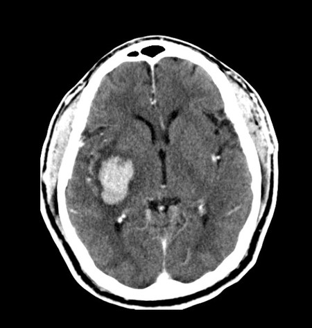
Q2
easy QID 24092
Correct
A 34-year-old patient presents with a palpable breast mass. How should this be reported?
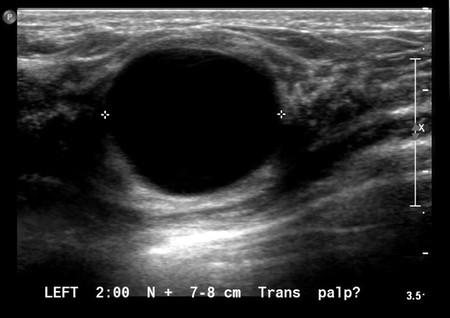
ABIRADS 0(0%)
BBIRADS 1(1%)
CBIRADS 2(98%)
DBIRADS 3(0%)
EBIRADS 4(0%)
FBIRADS 5(0%)
Your answerC
Correct answerC. BIRADS 2
Vital Concept
Simple cysts that meet all sonographic criteria (anechoic, well-circumscribed with thin echogenic capsule, increased through-transmission, and thin edge shadows) are classified as BI-RADS 2 (benign), allowing return to routine screening protocols without further intervention.
Explanation
BIRADS 2
For patients ages 30-39 with palpable breast abnormality, ultrasound, or mammography may be performed first for patients at the discretion of the referring provider or radiologist. In this case, if the ultrasound had been negative, diagnostic mammography would be an appropriate next step.
The ultrasound image shows a circumscribed mass that is anechoic (blue arrow), has a very thin wall (green arrow), and demonstrates increased through transmission (yellow arrow). These are features of a simple cyst. As such, this is a benign lesion, and by definition BI-RADS 2.
Incorrect Answers:
A. BI-RADS 0 is used for findings that need additional imaging evaluation and/or prior mammograms for comparison. As this image is a classic appearance for a benign cyst, this choice is incorrect.
B. BI-RADS 1 is reserved for normal findings or a negative exam with nothing to comment on. While benign, a simple cyst is not considered normal.
D. BI-RADS 3 indicates a probable benign finding for which short interval follow-up is recommended. This should have a less than 2% chance of malignancy.
E. BI-RADS 4 indicates a suspicious finding for which biopsy should be considered. This is a broad category that spans from >2 to 95% chance of malignancy. This is further broken down into categories 4A, 4B, and 4C.
F. BI-RADS 5 is reserved for findings that are highly suggestive of malignancy (greater than or equal to 95% risk of malignancy) for which actions should be taken.
Vital Concept: Simple cysts that meet all sonographic criteria (anechoic, well-circumscribed with thin echogenic capsule, increased through-transmission, and thin edge shadows) are classified as BI-RADS 2 (benign), allowing return to routine screening protocols without further intervention.
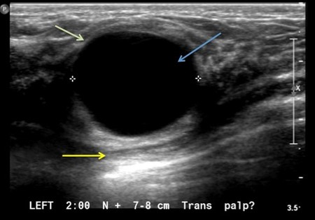
Q3
hard QID 39276
Correct
A 24-year-old female patient presents to the emergency department with severe sudden onset left lower quadrant pain. The patient undergoes a pelvic ultrasound. Which of the following is the most specific and definitive sign of ovarian torsion?
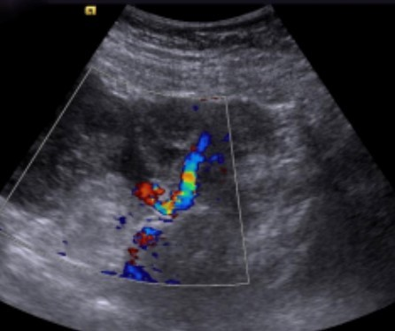
AAbnormal ovarian blood flow on Doppler imaging(7%)
BAbnormal location of the ovary(0%)
COvarian enlargement(21%)
DTwisted vascular pedicle(71%)
EPelvic free fluid(0%)
Your answerD
Correct answerD. Twisted vascular pedicle
Explanation
Twisted vascular pedicle
The sonographic image shows a twisted vascular pedicle (yellow arrow) extending into an enlarged and hypoechoic ovary (green arrow). Ovarian torsion is defined as partial or complete rotation of the ovarian vascular pedicle and causes obstruction to venous outflow and arterial inflow. Torsion occurs in the setting of ovarian hypermobility or an adnexal mass. Ultrasound is the primary imaging modality for evaluation of ovarian torsion. Many sonographic features of ovarian torsion have been described and include a unilateral enlarged ovary (most common sign), an ectopic ovary, uniform peripheral cystic structures, an associated mass within the affected ovary, free pelvic fluid, lack of arterial or venous flow, and a twisted vascular pedicle. It should be emphasized that the presence of flow at color Doppler imaging does not allow exclusion of torsion, as the ovary has a dual blood supply from the ovarian and uterine arteries, but instead suggests that the ovary may be viable. Lack of flow in the twisted vascular pedicle may indicate that the ovary is not viable. In a study by Lee et al., a twisted vascular pedicle was detected in 88% of cases of ovarian torsion. It is considered the most specific and definitive sign of torsion.
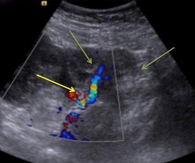
Q4
hard QID 22606
Correct
A 2-year-old female patient presents with a history of recurrent urinary tract infections. To work up the underlying cause, a VCUG is obtained (below). Which of the following is the most likely diagnosis?
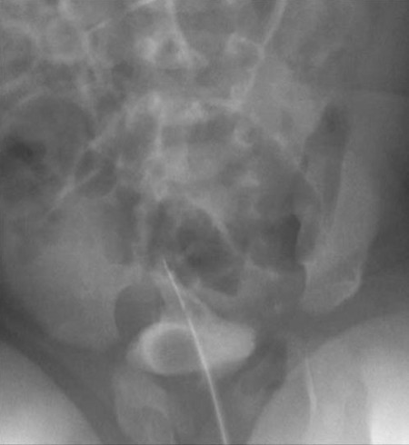
AUrinary bladder diverticulum(17%)
BUreteral duplication(65%)
CBladder stone(17%)
DTransitional cell carcinoma(0%)
EPyelonephritis(1%)
Your answerB
Correct answerB. Ureteral duplication
Vital Concept
Ureterocele appears as a filling defect in the bladder during early filling phase on anteroposterior images. Oblique projections clearly demonstrate ureteroceles with or without eversion. Simple intravesical ureteroceles appear as smooth filling defects within the bladder.
Explanation
Ureteral duplication
The image shown is from a voiding cystourethrogram. As part of this exam, the urinary bladder is catheterized, and contrast material is instilled into its lumen. Spot images are taken during early and late bladder filling, as well as during voiding.
On this exam, there is a filling defect within the bladder in the area of the right trigone consistent with a ureterocele. Ureteropelvic duplications are a relatively common cause of urinary tract obstruction in pediatric patients. They are typically characterized by the presence of two renal pelves and/or two ureters. The duplicated ureters may drain separately into the urinary bladder or join together at some point along their length. In cases of complete duplication, the drainage pattern is said to be governed by the Weigert-Meyer rule, which states that the upper pole moiety most frequently inserts ectopically inferomedial to the lower pole insertion and is more likely to obstruct. The lower pole moiety more frequently inserts normally and more frequently refluxes. The upper pole moiety may insert at any point along the distal genitourinary tract including the bladder, urethra, or vagina. If the ureter inserts at any point distal to the urinary sphincter, the patient will likely present with ongoing continuous urinary leakage. The upper pole moiety insertion is frequently associated with a ureterocele at its insertion, which is often the culprit of the urinary obstruction. Ureteroceles are typically seen on VCUG as a filling defect ipsilateral to the ureteral duplication.
Incorrect Answers:
A. Urinary bladder diverticula are common causes of urinary stasis in patients with chronic urinary bladder obstruction or may be congenital in nature. They are usually seen as outpouchings of the bladder contour on cystography and are not usually seen until relatively late in the filling phase of cystography. Due to associated urinary stasis, they are commonly associated with the development of bladder stones and may predispose patients to squamous cell carcinoma of the urinary bladder.
C. Urinary bladder stones are frequently encountered in the setting of urinary stasis within the urinary bladder. They may appear as mobile hypodense filling defects on contrast cystography (if radiolucent) or as a mobile hyperdense mass on pre-filling images. In this demographic, bladder stones are less likely than ureteral duplication with ureterocele.
D. Transitional cell carcinoma (TCC) in the urinary bladder may produce an exophytic hypodense filling defect on contrast cystography, while in the ureter it may produce a focal mass lesion that can lead to ureteral obstruction. On excretory urography, it is said to produce a “goblet” shaped filling defect. It tends to be infiltrative in the renal parenchyma when it invades the kidney and produces a more diffuse pattern of irregular contrast enhancement, rather than focally producing a renal contour abnormality, which is a characteristic finding in the presence of renal cell carcinoma (RCC). Additionally, when evaluating TCC patients, special attention should be paid to the distal collecting system, ureter, and bladder, as TCC tends to be a multicentric tumor with metachronous and synchronous lesions quite common within the lower tract when an upper tract tumor is seen (and vice versa). Transitional cell carcinoma is quite rare in the pediatric population.
E. Pyelonephritis can appear on CT with striated nephrograms, delayed nephrographic phase of contrast, perinephric stranding and/or fluid. Occasionally, perinephric fluid may become complicated so as to form a perinephric abscess, which would require drainage. While ongoing urinary obstruction may lead to pyelonephritis, there are no specific findings in this case to suggest it.
Vital Concept: Ureterocele appears as a filling defect in the bladder during early filling phase on anteroposterior images. Oblique projections clearly demonstrate ureteroceles with or without eversion. Simple intravesical ureteroceles appear as smooth filling defects within the bladder.
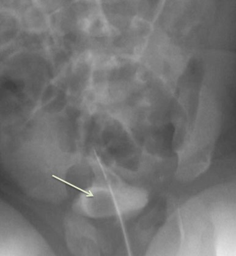
Q5
hard QID 56225
Incorrect
A 46-year-old female patient presents with jaundice and abdominal pain. A contrast-enhanced multiphasic computed tomography (CT) scan of the liver is performed with select images shown below. Which of the following is the most likely diagnosis and underlying condition?
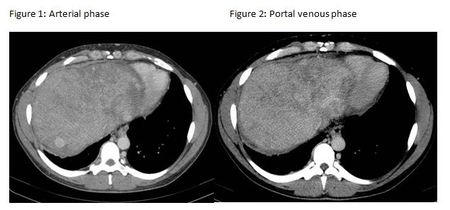
AHepatoma (Hepatocellular Carcinoma) in the setting of primary sclerosing cholangitis(14%)
BHepatic adenoma in the setting of primary sclerosing cholangitis(2%)
CHepatic adenoma in the setting of Budd-Chiari syndrome(17%)
DHepatocellular carcinoma in setting of Budd-Chiari syndrome(67%)
Your answerA
Correct answerD. Hepatocellular carcinoma in setting of Budd-Chiari syndrome
Vital Concept
Hepatocellular carcinoma in Budd-Chiari appears as a solitary mass with arterial hyperenhancement and venous washout, but regenerative nodules can frequently mimic this pattern. Hepatobiliary phase magnetic resonance imaging can be used to distinguish malignancy from benign nodules, showing hypointensity and elevated alpha-fetoprotein in cases of HCC.
Explanation
Hepatocellular carcinoma in setting of Budd-Chiari syndrome
The posterior aspect of the right hepatic lobe (segment 7) demonstrates an arterially enhancing lesion (yellow arrow) with subsequent washout (red arrow) on portal venous imaging, consistent with hepatocellular carcinoma. Additionally, there is a diffuse hepatic background of peripheral and peri-portal low attenuation, most suggestive of Budd-Chiari syndrome. It should be noted, however, that LI-RAD scoring is not applicable to Budd-Chiari syndrome since the lesion may resemble regenerative nodules.
In the acute presentation, the liver would demonstrate altered perfusion and enlargement. Over time, the liver would become cirrhotic in morphology with regenerative nodules and venous collateralization. Additionally, patients would be at risk for developing hepatocellular carcinoma as depicted in this case.
Incorrect Answers:
A. The underlying parenchymal abnormalities are due to hepatic vein thrombosis rather than biliary ductal dilation.
B. Although hepatic adenomas demonstrate arterial enhancement, they become isointense to background parenchyma on delayed image rather than washout.
C. The underlying hepatic abnormality is Budd-Chiari syndrome, but the lesion is most consistent with a hepatocellular carcinoma.
Vital Concept: Hepatocellular carcinoma in Budd-Chiari appears as a solitary mass with arterial hyperenhancement and venous washout, but regenerative nodules can frequently mimic this pattern. Hepatobiliary phase magnetic resonance imaging can be used to distinguish malignancy from benign nodules, showing hypointensity and elevated alpha-fetoprotein in cases of HCC.
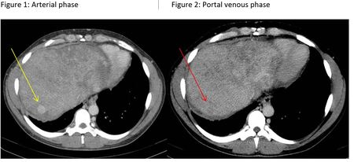
Q6
moderate QID 3079
Correct
Which of the following choices contains both the correct diagnosis and radiopharmaceutical used in the nuclear study shown below?
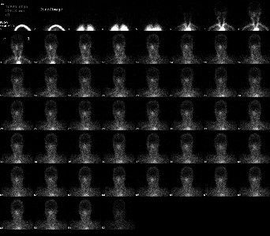
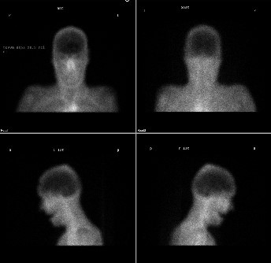
ANormal exam; Tc-99m ECD(0%)
BLack of intracranial blood flow; Tc-99m HMPAO(83%)
CNormal exam; Tc-99m HMPAO(0%)
DLack of intracranial blood flow; Indium-111 DTPA(17%)
Your answerB
Correct answerB. Lack of intracranial blood flow; Tc-99m HMPAO
Vital Concept
HMPAO crosses the blood-brain barrier allowing delayed imaging at 20 minutes to assess brain tissue perfusion. Brain death requires complete absence of uptake in cerebral hemispheres and posterior fossa.
Explanation
Lack of intracranial blood flow; Tc-99m HMPAO
This study, a brain-death scan, is used in the setting of suspected brain death to assess for the absence of intracranial blood flow. The angiographic phase (right) and static phase images (left) demonstrate blood flow through the internal carotid arteries but no intracerebral blood flow. Thus, there is no brain uptake of the radiopharmaceutical, a finding that is compatible with brain death in the appropriate clinical setting. Keep in mind that brain death is primarily a clinical diagnosis. The lack of intracerebral blood flow in this setting occurs because of a combination of increased intracranial pressure, thrombosis, and cerebral infarction. Radiopharmaceuticals typically used in brain death studies include Tc-99m HMPAO (Ceretec), Tc-99m-ECD (Neurolite) or Tc-99m DTPA.
Incorrect Answers:
A. The study is not normal as no intracerebral blood flow is demonstrated.
C. This is not a normal brain perfusion exam as no intracerebral blood flow to the brain is demonstrated. The radiopharmaceutical choice in the answer is correct, however.
D. Indium-111 DTPA is used in radionuclide cisternography, not in brain perfusion scintigraphy.
Vital Concept: HMPAO crosses the blood-brain barrier allowing delayed imaging at 20 minutes to assess brain tissue perfusion. Brain death requires complete absence of uptake in cerebral hemispheres and posterior fossa.
Q7
easy QID 2825
Correct
Given the image, which of the following is the likely diagnosis?
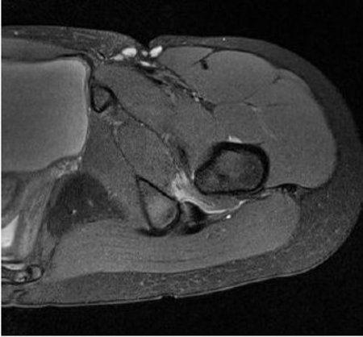
APyomyositis(1%)
BFemoroacetabular impingement(4%)
CIschiofemoral impingement(94%)
DPost-traumatic contusion(1%)
Your answerC
Correct answerC. Ischiofemoral impingement
Vital Concept
Ischiofemoral impingement refers to the impingement of soft tissues between the ischial tuberosity and lesser trochanter of the femur.
Explanation
Ischiofemoral impingement
On the axial T2 fat sat image shown, there is increased signal of the quadratus femoris as it passes between the lesser trochanter of the femur and the ischial tuberosity, compatible with ischiofemoral impingement. This entity is an uncommon cause of hip pain but should be considered when there is focal signal abnormality in the quadratus femoris. Ischiofemoral impingement is more common in women, can be bilateral in 25% of cases and often presents with narrowing of the distance between the ischium and lesser trochanter.
Incorrect Answers:
A. Fluid collections within the muscle should be seen in the context of pyomyositis.
B. This is not the femoroacetabular region.
D. In case of post-traumatic contusion, edema would likely be less localized to a single structure.
Vital Concept: Ischiofemoral impingement refers to the impingement of soft tissues between the ischial tuberosity and lesser trochanter of the femur.
Q8
moderate QID 2704
Correct
Which of the following is a result of breast compression during mammography?
AIncreased probability of motion unsharpness(5%)
BSlightly increased radiation dose(8%)
CReduces overlap of glandular anatomy(84%)
DIncreased scatter radiation(3%)
Your answerC
Correct answerC. Reduces overlap of glandular anatomy
Vital Concept
Breast compression during mammography provides decreased absorbed radiation dose, decreased scatter radiation, reduction of overlapping anatomical structures, and decreased motion unsharpness.
Explanation
Reduces overlap of glandular anatomy
Compression of the breast tissue results in spread and thinning of the imaged anatomy, generally allowing for better differentiation of glandular tissue and fat and allows for better detection of any underlying lesions that may be present.
Incorrect Answers:
A. Breast compression during mammography decreases the motion unsharpness due to stabilization/immobilization of the breast.
B. Breast compression thins the breast tissue; the radiation required to penetrate the thinner tissue is less than if no compression was applied.
D. Breast compression reduces the thickness of the tissue the x-rays pass through, resulting in a shorter path and less opportunity for scatter effects.
Vital Concept: Breast compression during mammography provides decreased absorbed radiation dose, decreased scatter radiation, reduction of overlapping anatomical structures, and decreased motion unsharpness.
Q9
moderate QID 22613
Incorrect
A 3-year-old male patient presents for evaluation of a palpable flank mass. Which of the following is the diagnosis?
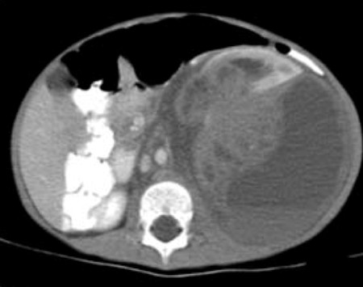
AWilms tumor(82%)
BNeuroblastoma(5%)
CMesoblastic nephroma(3%)
DNephroblastomatosis(0%)
EMultilocular cystic nephroma(10%)
Your answerE
Correct answerA. Wilms tumor
Vital Concept
Wilms tumor is the most common renal tumor in children with a mean age of diagnosis at 3 to 4 years. On CT, it appears as a heterogeneous mass showing less enhancement than surrounding normal renal parenchyma. Always assess the renal vein and inferior vena cava for tumor thrombus. Most frequently metastasizes to the lungs.
Explanation
Wilms tumor
Wilms tumor is a malignant tumor of the primitive metanephric blastema and is the most common abdominal neoplasm in pediatric patients aged 1 to 8 years old, peaking at age 3. It is associated with deletion of a tumor suppressor gene on chromosome 11. They typically appear as large, enhancing, heterogeneous renal masses on CT (red arrow). They tend to cause local mass effect and displace adjacent organs and have a characteristic “claw” of contiguous normal renal tissue (green arrow), indicating their primary location within the kidney. They calcify less frequently than neuroblastomas. They are associated with certain syndromes, such as Beckwith-Wiedemann syndrome, Denys-Drash syndrome, and WAGR (Wilms tumor, aniridia, genitourinary anomalies, and intellectual disability). They are treated with a combination of surgical resection, chemotherapy, and radiation.
Incorrect Answers:
B. Neuroblastomas are common malignant lesions in the pediatric population and frequently involve the adrenal medulla, retroperitoneum, or mediastinum. They are most commonly encountered in patients less than two years old (in contradistinction to Wilms tumor, which peaks at age 3). Neuroblastomas are heterogeneous in appearance owing to internal hemorrhage and necrosis, with typical internal calcification. They are usually hyperintense on T2-weighted imaging and hypointense on T1-weighted imaging with heterogeneous enhancement. In contradistinction to Wilms tumor, they tend to engulf adjacent vascular structures rather than exerting mass effect upon them. They frequently metastasize to bone and liver. They may be imaged with Tc99m bone scan and MIBG scintigraphy for evaluation of metastatic extent. Staging of neuroblastoma is unique, and is given as follows:
Stage 1—tumor confined to initial organ
Stage 2—tumor extends beyond organ but not across midline
Stage 3—tumor crosses midline
Stage 4—distant metastasis
Stage 4S—metastasis to skin, liver, and bone marrow in a patient less than one year of age. This is an important distinction to make, as the survival expectancy in this stage is almost 100% and may spontaneously resolve
C. Mesoblastic nephroma is a typically benign tumor of neonates, composed primarily of fibroblasts. It is best characterized as a unilateral intrarenal solid tumor with variable internal cystic necrosis, hemorrhage, and enhancement in a neonatal patient. It may be indistinguishable from Wilms tumor, but the age of the patient should suggest the diagnosis over Wilms tumor. They are usually resected surgically, which is typically curative.
D. Nephroblastomatosis is a form of persistent metanephric blastema in pediatric patients. It is characterized as diffuse nephrogenic rests within the renal parenchyma and is typically seen as a homogeneous rind of renal masses that surround the kidney or are dispersed within the renal parenchyma. This rind of tissue tends to enhance to a lesser degree than that seen in the remainder of the normal kidney. It is most frequently encountered during the period of infancy and may degenerate into Wilms tumor. Therefore, regular surveillance for increase in size or the development of heterogeneity is important, as this finding could signal conversion to Wilms tumor.
E. Multilocular cystic nephroma is a cystic renal mass which, when encountered in the pediatric population, is more common in male patients, but is far more common in the adult female population. In the pediatric population it is most common between the ages of 3 months to 2 years. The typical appearance is that of a large multicystic mass with variably enhancing internal septations. They are typically benign masses that are usually treated with surgical resection, which is usually curative. However, the presence of immature elements (metanephric blastema) within the mass can confer the potential for aggressive behavior, leading to a lesion carrying a similar prognosis to that of Wilms tumor.
Vital Concept: Wilms tumor is the most common renal tumor in children with a mean age of diagnosis at 3 to 4 years. On CT, it appears as a heterogeneous mass showing less enhancement than surrounding normal renal parenchyma. Always assess the renal vein and inferior vena cava for tumor thrombus. Most frequently metastasizes to the lungs.
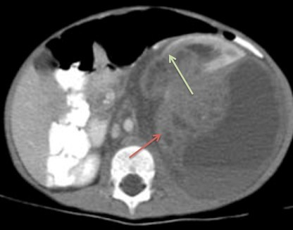
Q10
hard QID 21598
Correct
A 48-year-old male patient otherwise asymptomatic presents with history of percutaneous coronary intervention and has the following imaging finding. Which of the following is the initial preferred treatment?
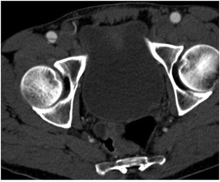
AWatchful waiting(61%)
BAngioplasty alone(3%)
CAngioplasty and stent(10%)
DSurgical bypass(0%)
ESystemic anticoagulation(25%)
Your answerA
Correct answerA. Watchful waiting
Vital Concept
Asymptomatic, non-flow-limiting CFA dissections are managed with observation/watchful waiting as they commonly resolve spontaneously. Flow-limiting/symptomatic dissections require intervention with stenting or surgical repair.
Explanation
Watchful waiting
The imaging demonstrates a potential complication of percutaneous arterial intervention, vascular dissection (seen here in the right common femoral artery – red arrow) associated with arterial puncture. In the setting of an otherwise asymptomatic vascular dissection without evidence of thrombosis or distal vascular compromise, watchful waiting is likely the best option for treatment.
Incorrect Answers:
B. Angioplasty alone with a low-pressure balloon is sometimes used intraprocedurally when an iatrogenic dissection is identified.
C. Angioplasty and stent may be useful for the treatment of flow-limiting iatrogenic femoral artery dissections. However, if there is no evidence of decreased distal perfusion, stenting may not be indicated.
D. Surgical bypass is not recommended for the treatment of focal iatrogenic femoral artery dissection.
E. Systemic anticoagulation may be necessary after the placement of a vascular stent, but primary systemic anticoagulation is not recommended, especially since another procedure may be necessary.
Vital Concept: Asymptomatic, non-flow-limiting CFA dissections are managed with observation/watchful waiting as they commonly resolve spontaneously. Flow-limiting/symptomatic dissections require intervention with stenting or surgical repair.
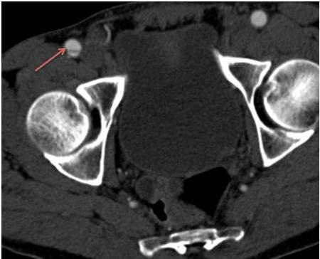
Q11
moderate QID 18726
Correct
These images are taken from a 33-year-old male patient with elevated aspartate aminotransferase (AST), alanine aminotransferase (ALT), alkaline phosphatase, and bilirubin. Given the appearance below, which of the following diseases of the gastrointestinal tract is the patient most likely to also have?
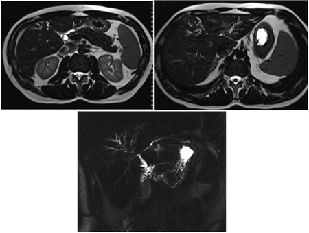
ACrohn's disease(5%)
BUlcerative colitis(89%)
CWhipple's disease(3%)
DCeliac sprue(2%)
EGiardiasis(1%)
Your answerB
Correct answerB. Ulcerative colitis
Explanation
Ulcerative colitis
Axial T2 magnetic resonance (MR) images through the liver and a coronal maximum intensity projections (MIP) MRCP show diffuse alternating segments of intrahepatic biliary dilatation (green arrows) and stricturing (yellow arrows), the so-called "pruned tree" appearance.
The appearance of the bile ducts, in this case, is most in keeping with primary sclerosing cholangitis, which is commonly associated with ulcerative colitis, the features of which include continuous, nontransmural inflammation of the colon, which often involves the anorectal junction.
Incorrect Answers:
A. Crohn's disease is associated with primary sclerosing cholangitis (PSC), but less so than UC is. Its features include discontinuous, transmural inflammation of multiple segments of the bowel, which may develop fistulae, abscesses, and sinus tracts.
C. Whipple's disease is an infectious small bowel malabsorption syndrome that produces jejunal fold thickening and nodules, copious secretions, loose stools, and with characteristic low-density adenopathy.
D. Celiac sprue is an inflammatory enteropathy thought to be related to dietary gluten, which produces small bowel dilatation, copious secretions, reversal of the jejunal and ileal fold patterns, and can be a source of transient intussusceptions.
E. Giardiasis similarly causes dilatation of the small bowel (typically only proximal) with dilution and segmentation of the enteric contrast column. It is not associated with biliary tract findings above.
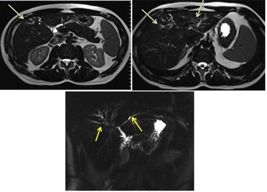
Q12
hard QID 22572
Incorrect
A 7-month-old male patient presents with seizures. Which of the following is the diagnosis?
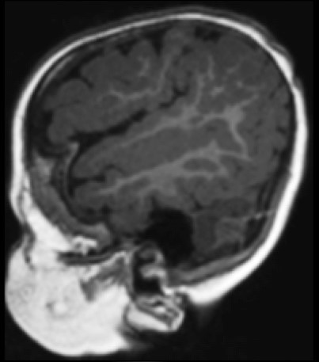
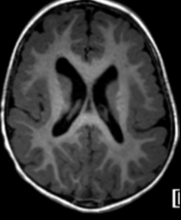
APachygyria(17%)
BPolymicrogyria(77%)
CAgyria(0%)
DMesial temporal sclerosis(4%)
ESchizencephaly(2%)
Your answerA
Correct answerB. Polymicrogyria
Vital Concept
Polymicrogyria shows poor differentiation between cortex and underlying white matter on T1-weighted images. The cortex appears abnormally thickened with an irregular cortical-white matter junction. Small fine undulating gyri may be difficult to detect on imaging.
Explanation
Polymicrogyria
Polymicrogyria is a cortical dysplasia consisting of abnormal distribution of neuronal tissue that produces an abnormally high number of small, shallow sulci (green arrows). It may be confused with pachygyria because the high number of small gyri and sulci may appear fused on lower-resolution sequences, giving the illusion of abnormally thick, broad gyri. It may be associated with areas of schizencephaly. It is frequently associated with intrauterine infection.
Incorrect Answers:
A. Pachygyria is characterized by an abnormally thickened, smooth cortex with broad, flattened gyri. It frequently appears in conjunction with polymicrogyria (pachygyria-polymicrogyria).
C. Agyria is another way of describing the findings of lissencephaly (“smooth brain”) in which there is absence of normal gyri formation. It may be associated with polymicrogyria in agyria-polymicrogyria complex.
D. Mesial temporal sclerosis is a cause of drug-resistant seizures in children. Diagnosis of this entity requires thorough evaluation of the hippocampi and is usually best seen on coronal images, most commonly presenting with diminished hippocampal volume, increased T2 signal and morphological abnormalities; these findings are not depicted here.
E. Schizencephaly is characterized by gray matter-lined clefts extending through the brain parenchyma, communicating with the ventricular system. They are acquired in utero and may be the result of infection, vascular injury, toxin exposure, or trauma. Most frequently they are found in the frontal and/or parietal lobes and may be bilateral. They may be characterized as “open lip” or “closed lip” based on the width of the cleft. Frequently they are associated with cortical dysplasias in the region of the abnormality, such as pachygyria, polymicrogyria, or gray matter heterotopias.
Vital Concept: Polymicrogyria shows poor differentiation between cortex and underlying white matter on T1-weighted images. The cortex appears abnormally thickened with an irregular cortical-white matter junction. Small fine undulating gyri may be difficult to detect on imaging.
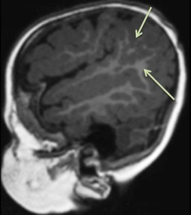
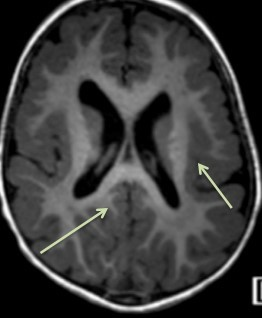
Q13
easy QID 37593
Correct
Which of the following is a key feature in establishing a "culture of safety?"
AAcknowledgment of only the low-risk nature of an organization’s activities(0%)
BAccepting inconsistently safe operations(0%)
CA root cause analysis system, which, among other things, ascribes blame to a particular provider(1%)
DDiscouragement of collaboration across ranks and disciplines to seek solutions to patient safety problems(0%)
EOrganizational commitment of resources to address safety concerns(98%)
Your answerE
Correct answerE. Organizational commitment of resources to address safety concerns
Vital Concept
Organizational commitment of resources to address safety concerns is a key feature in establishing a culture of safety.
Explanation
Organizational commitment of resources to address safety concerns
Improving the culture of safety within health care is an essential component of preventing or reducing errors and improving overall health care quality. Studies have documented considerable variation in perceptions of safety culture across organizations and job descriptions. In prior surveys, nurses have consistently complained of the lack of a blame-free environment, and providers at all levels have noted problems with organizational commitment to establishing a culture of safety. The underlying reasons for the underdeveloped health care safety culture are complex, with poor teamwork and communication, a “culture of low expectations,” and authority gradients all playing a role. With that said, it is of the utmost importance to develop a “culture of safety” that encompasses these key features: (E) Organizational commitment of resources to address safety concerns.
Incorrect Answers:
A and B. Acknowledgment of the high-risk (not low-risk) nature of an organization’s activities and the determination to achieve consistently (not inconsistently) safe operations.
C. A blame-free environment where individuals are able to report errors or near misses without fear of reprimand or punishment (not an environment that promotes blame).
D. Encouragement (not discouragement) of collaboration across ranks and disciplines to seek solutions to patient safety problems.
Vital Concept: Organizational commitment of resources to address safety concerns is a key feature in establishing a culture of safety.
Q14
moderate QID 20930
Correct
A 53-year-old male patient undergoes contrast cavography. The patient has a history of recent subarachnoid hemorrhage and recent lower extremity Doppler ultrasound consistent with deep venous thrombosis (DVT). Of the following choices, which of the following is the most appropriate management at this time?
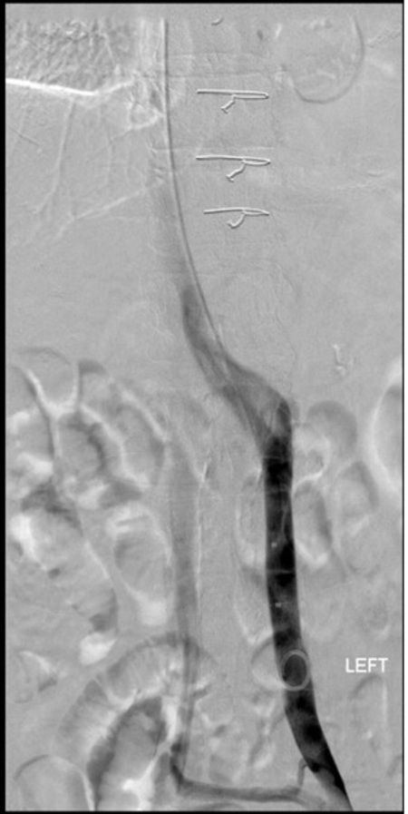
APlace a single standard infrarenal IVC filter(15%)
BTherapeutic anticoagulation(1%)
CPlace a bird’s nest IVC filter(3%)
DPlace a single suprarenal inferior vena cava (IVC) filter(81%)
ELower extremity thrombectomy(1%)
Your answerD
Correct answerD. Place a single suprarenal inferior vena cava (IVC) filter
Explanation
Place a single suprarenal inferior vena cava (IVC) filter
The cavogram demonstrates duplicated IVC. The duplicate IVC is more opacified (on the left – blue arrow), while the anatomic IVC is less opacified (on the right – red arrow). When a patient has a duplicated IVC, there is an alternative route of blood flow back to the heart, allowing for a second route of potential pulmonary embolization.
Sources suggest this situation is present in anywhere from 0.2 to 3% of the population. If interruption of blood return to the heart is chosen as a therapeutic measure, placement of a suprarenal IVC filter or IVC filters in each of the duplicated IVC should be undertaken.
Incorrect Answers:
A. Placement of a single standard infrarenal IVC filter would not be a wise choice because it ignores the presence of an alternative route for blood return.
B. Therapeutic anticoagulation is not a good option due to the presence of intracranial hemorrhage, which is a contraindication.
C. Bird’s nest IVC filters are most often used in the setting of megacava, in which the IVC is greater than 28 mm in diameter, up to 40 mm.
E. Lower extremity thrombectomy would be a much more aggressive surgical approach to therapy and is likely not necessary in this case.
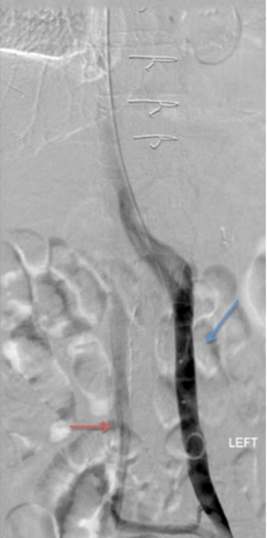
Q15
moderate QID 39261
Correct
A 58-year-old female patient presents to their gynecologist with pelvic pain and vaginal bleeding. The patient is referred to a provider's department for further evaluation. Which of the following is true regarding their likely diagnosis?
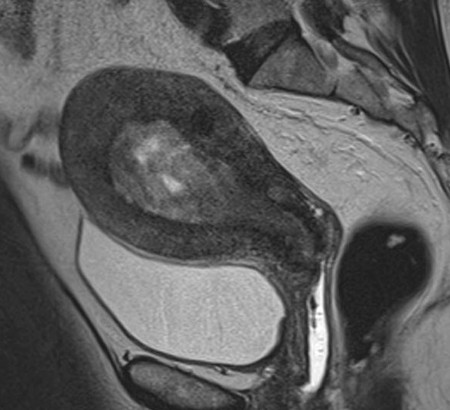
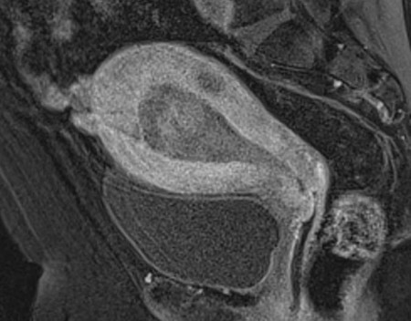
AThis condition is typically seen in premenopausal patients.(3%)
BThere is no known correlation with obesity.(2%)
CIt is the most common gynecological malignancy in the United States.(78%)
DThere is no correlation with hormone replacement therapy.(1%)
EThe disease tends to present at more advanced, later stages.(16%)
Your answerC
Correct answerC. It is the most common gynecological malignancy in the United States.
Explanation
It is the most common gynecological malignancy in the United States.
The sagittal T2 (top) and post gadolinium T1 (bottom) images demonstrate a heterogeneous and mass-like appearance to the endometrium, which is enlarged. Following contrast administration there is relative hypo-enhancement of this lesion (yellow arrow). The imaging features along with the history provided are highly suspicious for endometrial carcinoma.
Incorrect Answers:
A. Endometrial carcinoma is the most common gynecological malignancy in the United States. It typically presents in post-menopausal patients, and peaks at around the 6th decade. Only 12% of cases present in premenopausal women.
B, D. Any condition that leads to unopposed estrogen (hormone replacement therapy, obesity [fat cells produce low levels of estrogen]) is a relative risk factor for development of endometrial carcinoma. Along these lines, additional risk factors include polycystic ovarian syndrome, anovulatory cycles, tamoxifen, early menarche or late menopause, and nulliparity.
E. Because it typically manifests clinically as abnormal post-menopausal bleeding, women tend to seek treatment earlier in the course of the disease, not at the more advanced stages. Such is the case here, as the low signal junctional zone can be seen to be intact circumferentially (blue arrows), indicating a lack of myometrial invasion.
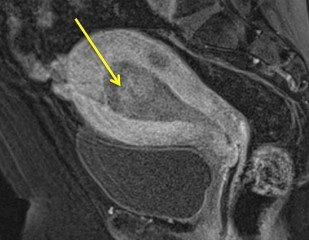
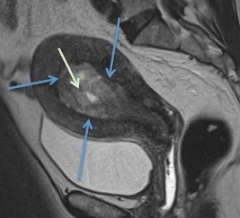
Q16
moderate QID 22438
Correct
A 34-year-old female patient undergoes uterine artery embolization. Which of the following is an absolute contraindication to this procedure?
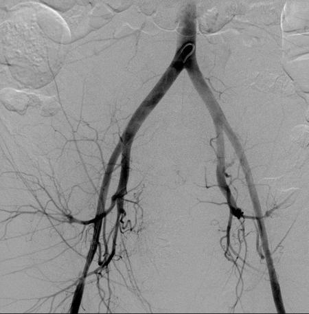
AUterine segmentation anomaly(1%)
BAdenomyosis(0%)
CCurrent pelvic inflammatory disease(89%)
DDesire for future pregnancy(9%)
EPresence of an intrauterine contracepive device(1%)
Your answerC
Correct answerC. Current pelvic inflammatory disease
Vital Concept
Active pelvic inflammatory disease is an absolute contraindication to uterine artery embolization. UAE causes fibroid necrosis which creates necrotic tissue that serves as a nidus for bacterial proliferation. Pre-existing pelvic infection combined with necrotic tissue significantly increases sepsis risk and life-threatening complications.
Explanation
Current pelvic inflammatory disease
Current pelvic infections are a contraindication to uterine artery embolization procedures. It is thought that the presence of pelvic inflammatory disease places the patient at significant risk for severe pelvic infection after undergoing uterine artery embolization, due to coexistence of ischemic and infected tissue.
Incorrect Answers:
A. The presence of a uterine segmentation anomaly such as bicornuate uterus is not a contraindication to uterine artery embolization.
B. Adenomyosis is not a contraindication to uterine artery embolization. In fact, it is frequently cited as an indication for the procedure.
D. Uterine artery embolization is frequently performed for treatment of fibroids and other benign uterine pathology instead of hysterectomy, due to the desire for future fertility.
E. The presence of an intrauterine contraceptive device was once thought to elevate the risk of infection after embolization procedures. However, this has not been borne out in the literature.
Vital Concept: Active pelvic inflammatory disease is an absolute contraindication to uterine artery embolization. UAE causes fibroid necrosis which creates necrotic tissue that serves as a nidus for bacterial proliferation. Pre-existing pelvic infection combined with necrotic tissue significantly increases sepsis risk and life-threatening complications.
Q17
moderate QID 43836
Correct
A 45-year-old female patient who recently underwent wrist surgery has postoperative edema and pain that is difficult to adequately control. Which of the following were their most likely preoperative symptoms?
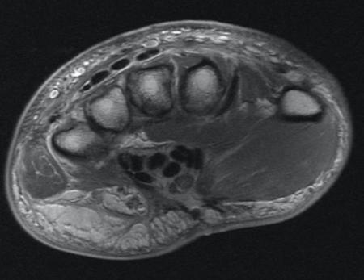
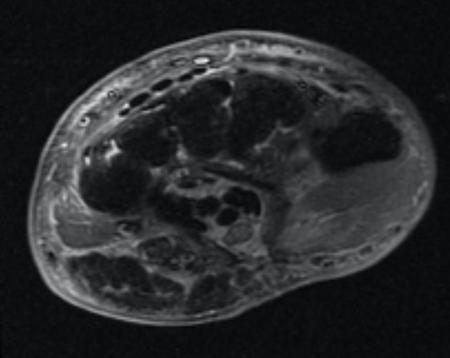
APain and instability with pronation and supination(1%)
BPain and paresthesia in the palmar thumb, index, and middle fingers(88%)
CPain and paresthesia in the ring and pinky fingers(4%)
DPain and paresthesia in the dorsum of the thumb, index, and middle fingers(5%)
EChronic or subacute ulnar-sided wrist pain, exacerbated by activity(2%)
Your answerB
Correct answerB. Pain and paresthesia in the palmar thumb, index, and middle fingers
Explanation
Pain and paresthesia in the palmar thumb, index, and middle fingers
The proton density and fat-saturated T2 axial images through the wrist show postoperative changes from a carpal tunnel release. There is a clear, wide-mouthed, surgical defect through the flexor retinaculum (yellow arrows). The median nerve appears mildly hyperintense (orange arrows), and there is mild to moderate surrounding soft tissue edema (blue arrows), compatible with the recent surgical history. Carpal tunnel syndrome (CTS) results from median nerve compression by the flexor retinaculum within the carpal tunnel. There is a wide spectrum of underlying pathologies, including osteoarthritis, trauma, acromegaly, mechanical overuse, masses, deposition of foreign material, or synovitis, among others. CTS is often treated conservatively with surgical release indicated in cases of pronounced nightly pain, permanent dysesthesias within the distribution of the median nerve (palmar thumb, index, and middle fingers).
Incorrect Answers:
A. Pain and instability with pronation and supination may be seen in triangular fibrocartilage complex and distal radioulnar joint injury.
C and D. Pain and paresthesia in the ring and pinky fingers or the dorsum of the thumb, index, and middle fingers are the distributions of the ulnar and radial nerves respectively.
E. Chronic or subacute ulnar-sided wrist pain exacerbated by activity are symptoms of ulnar impaction syndrome.
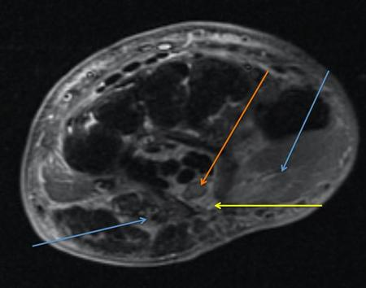
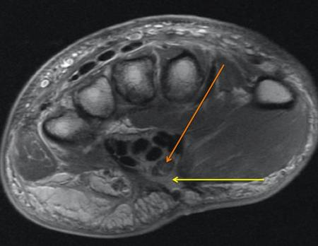
Q18
moderate QID 3062
Correct
A male patient had swelling of the scrotum. Which of the following is the diagnosis based on this scrotal sonography?
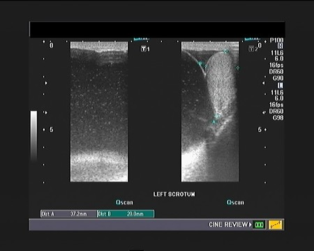
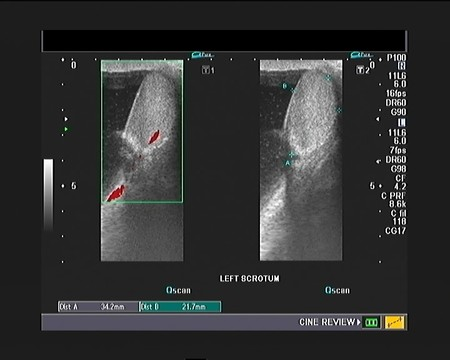
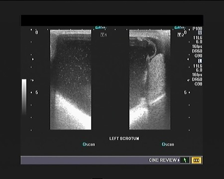
ALeft scrotal abscess(5%)
BLeft spermatocele(91%)
CNormal study(1%)
DTeratoma of scrotum(3%)
Your answerB
Correct answerB. Left spermatocele
Vital Concept
Large thin-walled cystic structure with innumerable small floating internal echoes is most compatible with spermatocele, representing retained spermatozoa in a dilated epididymal duct. The internal echoes distinguish it from simple epididymal cysts and confirm the benign nature, allowing conservative management in asymptomatic patients.
Explanation
Left spermatocele
The imaging findings of a large, thin-walled, hypoechoic structure containing innumerable small floating internal echoes throughout the left scrotum are characteristic of a spermatocele. This represents a retention cyst that develops from obstruction and dilatation of the epididymal ductal system, typically occurring in the head of the epididymis. The key distinguishing feature is the presence of internal echoes, which represent spermatozoa within the cyst fluid, differentiating it from a simple epididymal cyst that would appear completely anechoic. Management is typically conservative unless the patient experiences significant discomfort or the mass becomes problematic in size, in which case spermatocelectomy can be considered.
Incorrect Answers:
A. The color Doppler image shows normal vascularity of the testis and scrotum, ruling out abscess.
C. There is a large fluid collection around the left testis with particulate matter within the fluid.
D. No solid mass is evident in this study.
Vital Concept: Large thin-walled cystic structure with innumerable small floating internal echoes is most compatible with spermatocele, representing retained spermatozoa in a dilated epididymal duct. The internal echoes distinguish it from simple epididymal cysts and confirm the benign nature, allowing conservative management in asymptomatic patients.
Q19
moderate QID 22575
Correct
A 12-year-old female patient presents with a headache. Which of the following is the most likely diagnosis?
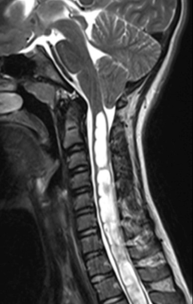
AChiari I malformation(83%)
BChiari II malformation(11%)
CChiari III malformation(1%)
DDandy-Walker malformation(0%)
ESyringomyelia(5%)
Your answerA
Correct answerA. Chiari I malformation
Vital Concept
Chiari 1 shows cerebellar tonsillar herniation below the foramen magnum greater than 3mm in children or 5mm in adults. Tonsils appear peg-like with effacement of CSF spaces around the foramen magnum. Associated syringomyelia is common. Brainstem position remains normal, distinguishing it from Chiari 1.5 malformation.
Explanation
Chiari I malformation
Arnold-Chiari malformations are a series of malformations of the cerebellum and hindbrain with a characteristic classification system. Chiari 1 malformations are a protrusion of the cerebellar tonsils below the foramen magnum (yellow arrows), typically peg-like in shape and greater than 5 mm below the foramen magnum. Other spinal segmentation anomalies may be seen in addition, such as cervical cord syrinx (green arrow) or tethered cord.
Chiari II malformations are characterized by the presence of a small posterior fossa with herniation of hindbrain tissue posterior to the upper cervical cord. The cerebellar tonsils tend to wrap around the medulla, while the fourth ventricle is stretched and narrowed. Cerebellar tissue often protrudes through the incisura and impacts the tectum, producing a “beaked” appearance. The absence of the cerebellar falx often produces interdigitation of the cerebellar folia. Patients frequently additionally have open neural tube defects in the spine, such as myelomeningoceles, which are more frequent in the lumbar spine than in the cervical spine.
Chiari III malformations are characterized by the presence of an upper cervical or occipital defect with associated meningoencephalocele. The cerebellum, brainstem, and/or upper cervical spinal cord may be pulled into the defect.
Incorrect Answers:
B. C. These are incorrect based on the description given above.
D. Dandy-Walker malformation (DWM) is a congenital anomaly thought to arise from abnormal development of the rhombencephalon with a resultant abnormal expansion of the fourth ventricle, which inhibits normal caudal migration of the tentorium and torcular herophili. The result is a classic configuration of the posterior fossa with three key features:
There are several other CNS and non-CNS anomalies associated with DWM, including cleft lip and palate, grey matter heterotopias and cortical dysplasias, callosal dysgenesis, PHACES syndrome (posterior fossa malformation, hemangiomas, and arterial malformations, cardiac defects, eye anomalies, sternal cleft), cardiac malformations, and genitourinary abnormalities. Life expectancy tends to follow the severity of these associated malformations.
E. Syringomyelia is a descriptive term for the presence of a cystic cavity within the spinal cord that is not contiguous with the central canal of the cord. Hydromyelia describes the presence of cystic dilatation of the central canal, while syringohydromyelia describes a scenario in which the abnormality has features of both syringomyelia and hydromyelia. Syringomyelia may be seen in conjunction with a Chiari I defect. The presence of the peg-like herniated cerebellar tonsils cinches the diagnosis of Chiari I.
Vital Concept: Chiari 1 shows cerebellar tonsillar herniation below the foramen magnum greater than 3mm in children or 5mm in adults. Tonsils appear peg-like with effacement of CSF spaces around the foramen magnum. Associated syringomyelia is common. Brainstem position remains normal, distinguishing it from Chiari 1.5 malformation.
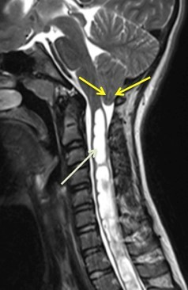
Q20
easy QID 43648
Correct
What is the most likely diagnosis in this 27-year-old male with pulsatile tinnitus? The first image is a coronal view computed tomography (CT), and the second is an axial view.
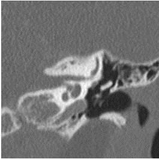
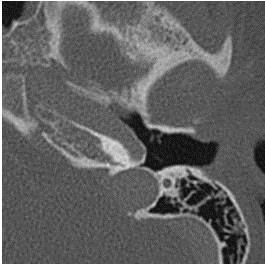
AGlomus tympanic paraganglioma(6%)
BCholesterol granuloma(2%)
CFacial nerve schwannoma(2%)
DCongenital cholesteatoma(3%)
EAberrant internal carotid artery(87%)
Your answerE
Correct answerE. Aberrant internal carotid artery
Explanation
Aberrant internal carotid artery
The axial temporal bone CT shows a laterally displaced internal carotid artery (red arrow) within the middle ear and in continuity with the carotid canal (green arrow). On the coronal section this is redemonstrated. This finding represents an aberrant internal carotid artery.
Incorrect Answers:
A. It is very important to note that one should not mistake an aberrant internal carotid artery (ICA) for glomus tympanicum paraganglioma. A glomus tympanicum paraganglioma represents a benign tumor arising from glomus bodies, which appears as a discrete soft tissue mass situated on cochlear promontory. The clinical presentation is most often a 40- to 60-year-old woman with pulsatile tinnitus and a vascular, retrotympanic mass on clinical exam.
B. Cholesterol granuloma appears as a confluent, soft tissue density middle ear mass. They are seen in a younger patient population (beginning in the second decade) and often associated with ossicles erosion.
C. A facial nerve schwannoma appears as a tubular mass emanating from tympanic CN VII canal, with or without enlargements of the bony facial nerve canal and geniculate fossa. Although one may see enlargement of the facial nerve canal in cases of persistent ICA (up to 30% also have a persistent stapedial artery), it would not account for the lateral displacement of the ICA seen in this case.
D. Congenital cholesteatoma represents a rest of epidermal tissue within the middle ear. They appear as a well-circumscribed, soft tissue, middle ear mass located medial to the ossicles. When detected early, they appear as a small, well-circumscribed soft tissue middle ear mass. Larger lesions may erode ossicles, middle ear wall, lateral semicircular canal, or tegmen tympani.
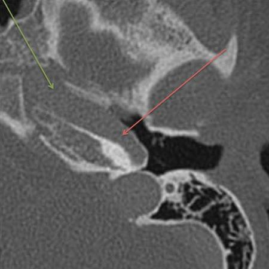
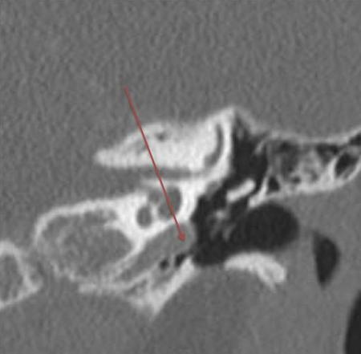
Q21
hard QID 38147
Correct
Which of the following is most consistent with this CT appearance?
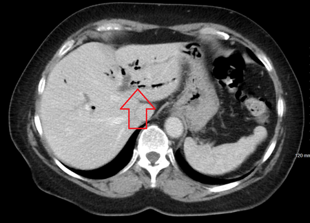
AAscending cholangitis(58%)
BNecrotic/ulcerated colorectal carcinoma(2%)
CInflammatory bowel disease(3%)
DIschemic bowel(33%)
EInfectious colitis(4%)
Your answerA
Correct answerA. Ascending cholangitis
Explanation
Ascending cholangitis
The CT image demonstrates air attenuation throughout the biliary system as it branches towards the periphery (open arrow).
Pneumobilia typically has a more central location, sparing the periphery because of the general hepatofugal flow of bile, whereas portal venous gas tends to extend farther out toward the periphery of the liver because of the hepatopetal flow of portal blood. Ischemic bowel may result in portal venous gas, which is typically a much more serious finding than pneumobilia (most often a benign finding). Any process that causes direct communication of the bowel with the biliary system can introduce gas into it, as in prior surgery (such as a pancreaticoduodenectomy, or Whipple procedure) or passage of a gallstone into the bowel (gallstone ileus). Procedures in which there has been sphincter of Oddi manipulation (such as ERCP) can also introduce gas into the biliary system. Rarely, bacterial infection can produce gas within the biliary system, which is a potentially life-threatening disease.
Incorrect Answers:
All of the incorrect answers are causes of portal venous gas, not biliary gas.
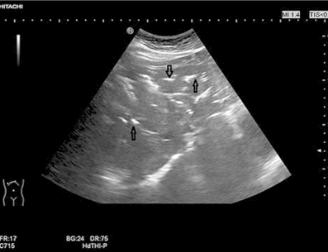
Q22
moderate QID 22549
Correct
A 3-week-old male patient presents for follow-up evaluation of abnormality noted on prenatal ultrasound. Which of the following is the diagnosis?
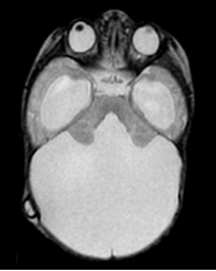
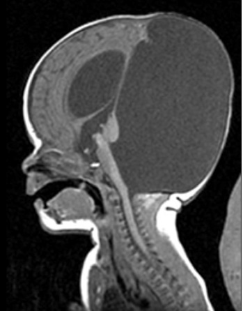
ASepto-optic dysplasia(1%)
BDandy-Walker malformation(84%)
CHoloprosencephaly(10%)
DMega cisterna magna(2%)
EPosterior fossa arachnoid cyst(3%)
Your answerB
Correct answerB. Dandy-Walker malformation
Vital Concept
DWM results from failed posterior vermian development. This causes inferior vermian hypoplasia with upward rotation and enlarged fourth ventricle. The classic MRI findings include vermian hypoplasia, enlarged fourth ventricle communicating with posterior fossa cyst, and elevated tentorium.
Explanation
Dandy-Walker malformation
There is a markedly enlarged posterior cranial fossa (blue arrows), which communicates with an open 4th ventricle (red arrow) seen on the axial T2 MRI. The sagittal T1 redemonstrates these findings, as well as shows a hypoplastic and underlobulated cerebellar vermis (yellow arrow) and ventriculomegaly (green arrow). This constellation of findings is diagnostic of Dandy-Walker malformation (DWM). This is a congenital anomaly thought to arise from abnormal development of the rhombencephalon with resultant abnormal expansion of the fourth ventricle, which inhibits normal caudal migration of the tentorium and torcular herophili. The result is a classic configuration of the posterior fossa with three key features: marked vermian hypoplasia or agenesis, cystic dilatation of the fourth ventricle, and “Torcular-lambdoid inversion.” The torcular lies too far superiorly, cranial to the lambdoid suture. Normally it should lie below the lambdoid. There are several other CNS and non-CNS anomalies associated with DWM, including cleft lip and palate, grey matter heterotopias and cortical dysplasias, callosal dysgenesis, PHACES syndrome (Posterior fossa malformation, hemangiomas and arterial malformations, cardiac defects, eye anomalies, sternal cleft), cardiac malformations, and genitourinary abnormalities. Life expectancy tends to follow the severity of these associated malformations.
Incorrect Answers:
A. Septo-optic dysplasia is characterized by absence of the septum pellucidum and hypoplasia/ dysplasia of the optic chiasm and/or optic nerves. Additionally, pituitary abnormalities can be seen, which often lead to clinical presentation with endocrinopathies. Clinical issues can include seizures, short stature, visual loss, cognitive impairment, among others.
C. Holoprosencephaly is the diagnosis when the finding is a single midline ventricle. It is due to failure of hemispheric cleavage and may be associated with other findings including facial defects such as hypotelorism and midface hypoplasia, as well as cyclopia, presence of a proboscis, single maxillary central incisor, among other midline facial defects. The cerebral falx is absent, and there is frequently an azygous anterior cerebral artery. Patients are typically markedly as cognitively impaired. There are varying degrees of holoprosencephaly. Alobar holoprosencephaly is the most severe, with no separation of hemispheres and a single central ventricle. Semilobar type has separation of the temporal lobes. Lobar types typically have a single frontal lobe with separation of the posterior brain structures and presence of the splenium of the corpus callosum.
D. Mega cisterna magna is primarily an obstetric diagnosis and can be suggested when the cisterna magna is greater than 10 mm in diameter on prenatal ultrasound. It may be differentiated from DWM spectrum abnormalities by the presence of an intact vermis.
E. Posterior fossa arachnoid cysts can be difficult to differentiate from mega cisterna magna but typically appear as extra-axial lesions producing mass effect on the adjacent brain. They follow CSF signal on T1- and T2-weighted imaging.
Vital Concept: DWM results from failed posterior vermian development. This causes inferior vermian hypoplasia with upward rotation and enlarged fourth ventricle. The classic MRI findings include vermian hypoplasia, enlarged fourth ventricle communicating with posterior fossa cyst, and elevated tentorium.
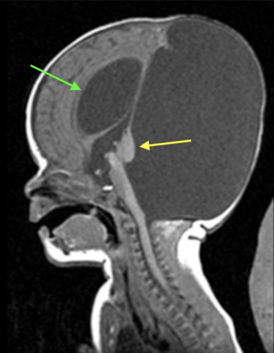
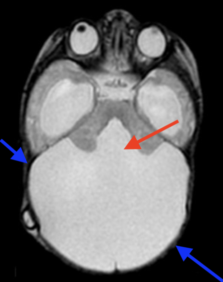
Q23
hard QID 49051
Incorrect
Which of the following is the critical organ for thallium-201?
ABowel(19%)
BSpleen(9%)
CLiver(11%)
DKidneys(61%)
Your answerC
Correct answerD. Kidneys
Vital Concept
The critical organ for thallium-201 is the kidney, receiving the highest radiation dose compared to other organs in myocardial perfusion imaging protocols.
Explanation
Kidneys
Thallium-201 (Th-201) is a radiopharmaceutical used for scintigraphy, primarily of the myocardium. The element thallium is treated by the body as an analog of potassium. It is produced in a cyclotron by bombarding thallium-203 with protons.
Its normal distribution is through the myocardium, skeletal muscle, gastrointestinal (GI) tract, liver and kidneys, with renal excretion. Its critical organ is the kidneys.
Incorrect Answers:
A. B. C. The bowel, spleen and liver are not the critical organs.
Vital Concept: The critical organ for thallium-201 is the kidney, receiving the highest radiation dose compared to other organs in myocardial perfusion imaging protocols.
Q24
hard QID 37600
Correct
The on-call radiologist receives a call from the CT technologist about a possible contrast reaction on an inpatient following a PE CT study. The radiologist comes to the scanner to examine the patient and find them to be partially responsive. The patient’s heart rate is 44/min and his blood pressure is 80/50 mmHg. The radiologist tells the technologist to call a code. Which of the following is the appropriate pharmacotherapy?
AEpinephrine (1:10,000) 0.1mg IV(20%)
BAtropine 0.6 to 1mg IV(79%)
CBenadryl 50mg IV(0%)
DFlumazenil 0.3 mg IV and naloxone 0.5 mg IV(0%)
EAdenosine 6mg IV(1%)
Your answerB
Correct answerB. Atropine 0.6 to 1mg IV
Vital Concept
If hypotension with bradycardia is severe, atropine is indicated. Emergency response assistance may be considered.
Explanation
Atropine 0.6 to 1mg IV
Atropine is a muscarinic acetylcholine antagonist and is useful in the treatment of bradycardia and associated hypotension.
Incorrect Answers:
A. Epinephrine is a catecholamine used in the treatment of severe anaphylaxis and anaphylactic shock. In this case, the patient would be tachycardic and hypotensive, not with bradycardia.
C. Diphenhydramine (Benadryl) is an antihistamine that also possesses some anticholinergic effects. It is often used for treatment of urticaria and/or pruritis in cases of mild intravenous contrast reactions.
D. Flumazenil is a competitive benzodiazepine antagonist that can be used in the rapid reversal of intravenous conscious sedation.
E. Adenosine is used in the treatment of supraventricular tachycardia, through its action on adenosine receptors in the cardiac A2 receptor.
Vital Concept: If hypotension with bradycardia is severe, atropine is indicated. Emergency response assistance may be considered.
Q25
hard QID 2941
Correct
Which of the following dose-response curves is used for radiation protection considerations?
AQuadratic(1%)
BLinear-quadratic(5%)
CLogarithmic no threshold(3%)
DLinear no threshold(79%)
ELinear with threshold(12%)
Your answerD
Correct answerD. Linear no threshold
Vital Concept
The Linear No-Threshold model assumes any radiation dose, no matter how small, carries some cancer risk with no safe threshold, and that cancer risk increases linearly with dose. This conservative model forms the basis for radiation protection standards in medical imaging and occupational exposure limits.
Explanation
Linear no threshold
For purposes of radiation protection, the "linear no threshold" model remains in use. This data is extrapolated from higher exposure rates. There is mounting evidence that the effects of radiation are overestimated at lower dose, and that there may actually be organ-specific thresholds at which carcinogenesis does not occur. However, the evidence is insufficient at this time and the linear no threshold model should be used for maximum safety precautions.
This is a typical dose response curve used in radiation studies. Curve A assumes that a dose-response relationship is proportional (biologic response is proportional to the dose); Curve B is a quadratic dose-response curve which shows a relatively proportional response at lower radiation doses but as the dose increases the biologic response increases in a rapid manner.
Incorrect Answers:
A. Quadratic dose-response curve states that the response to low-linear energy transfer (LET) radiation has a zero initial gradient and that the response is proportional to the square of the dose.
B. The linear-quadratic dose-response curves maintains that low-LET radiation possesses a high-LET component, causing the curve to begin in a linear fashion.
C. The logarithmic no threshold model is not used for radiation protection considerations.
E. The linear with threshold model estimates tissue damage from low-dose radiation by extrapolating from data regarding high-dose radiation exposure, which fails to reliably predict the effects of exposure to low-dose radiation.
Vital Concept: The Linear No-Threshold model assumes any radiation dose, no matter how small, carries some cancer risk with no safe threshold, and that cancer risk increases linearly with dose. This conservative model forms the basis for radiation protection standards in medical imaging and occupational exposure limits.
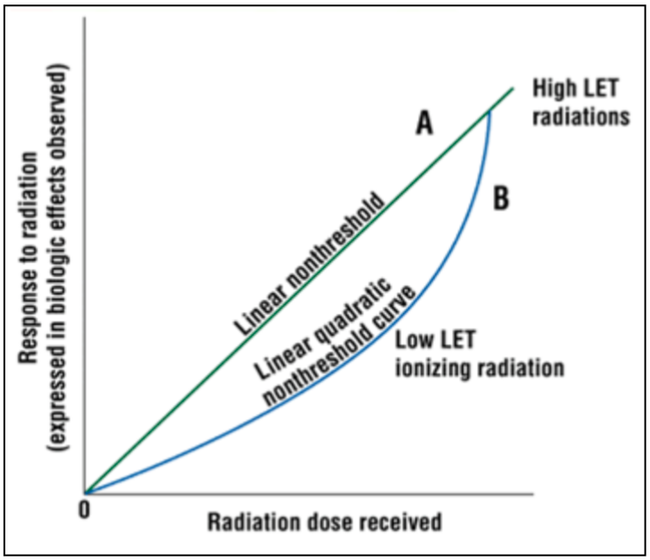
Q26
easy QID 48124
Correct
Which of the following is the diagnosis given the radiograph shown?
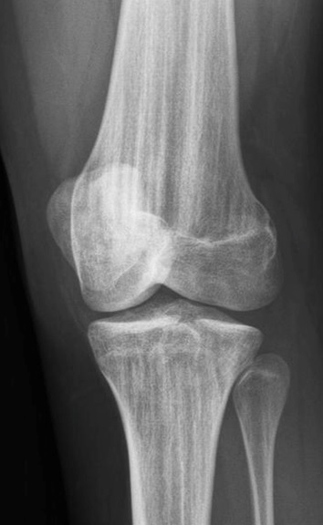
AGrowth arrest lines(0%)
BGrowth recovery lines(0%)
COsteopathia striata(98%)
DOsteopoikilosis(1%)
EMelorheostosis(1%)
Your answerC
Correct answerC. Osteopathia striata
Vital Concept
Osteopathia striata shows dense linear striations along the long axis of tubular bone diaphyses and metaphyses, with fan-like appearance in the pelvis.
Explanation
Osteopathia striata
The knee radiograph shows numerous vertical sclerotic lines in the femur and tibia. Osteopathia striata (also known as Voorhoeve disease) is a rare benign dysplasia of bone that appears as sclerotic vertical striations involving the epiphysis and metaphysis of tubular bones. It is typically asymptomatic, although there can be associated joint discomfort. Osteopathia striata can be found in any age group.
Incorrect Answers:
A. and B. Growth arrest and recovery lines refer to the same phenomenon. They appear as horizontal sclerotic lines (not vertical lines) at the metaphysis of long bones. They occur from alternating cycles of osseous growth arrest and growth resumption secondary to pathologic levels of stress during bone development (infection, malnutrition, etc).
D. Osteopoikilosis appears as multiple uniform ovoid/round sclerotic foci in a periarticular distribution. It may be monoarticular or polyarticular and preferentially affects the appendicular skeleton.
E. The classic appearance of melorheostosis is thick, undulating ridges of bone involving the cortex. It has a so-called "dripping wax" appearance. The abnormality is typically confined to sclerotomes, and can be seen apparently flowing across joints to the next bone. Of note, osteopathia striata, osteopoikilosis, and melorheostosis may occur simultaneously in mixed sclerosing bone dysplasia.
Vital Concept: Osteopathia striata shows dense linear striations along the long axis of tubular bone diaphyses and metaphyses, with fan-like appearance in the pelvis.
Q27
moderate QID 3084
Correct
A 50-year-old female presents to the emergency department with acute right upper quadrant pain. She states that she has had similar symptoms off and on over the last several months. A hepatobiliary scan is requested, with images shown below before and after the administration of sincalide (CCK-8), a cholecystokinin analog. The correct diagnosis is:
Adelayed radiotracer excretion due to hepatocellular dysfunction.(2%)
Bacute cholecystitis.(2%)
Cnormal study.(11%)
Dfunctional gallbladder disorder.(84%)
Your answerD
Correct answerD. functional gallbladder disorder.
Vital Concept
Functional gallbladder disorder presents as recurrent biliary colic without stones and is diagnosed by low gallbladder ejection fraction (<35%) using standardized 60-minute sincalide (CCK-8) infusion. Normal GBEF effectively excludes symptomatic gallbladder disease.
Explanation
functional gallbladder disorder.
There is prompt uptake of radiotracer by the gallbladder on initial images. Following administration of sincalide (CCK-8), there is excretion of radiotracer from the gallbladder, but less than expected. The calculated gallbladder ejection fraction is abnormally low at 30% (normal ≥ 35%). Such findings are consistent with functional gallbladder disorder.
Incorrect Answers:
A. There is prompt uptake of radiotracer by the liver with excretion into the biliary system.
B. There is prompt uptake of radiotracer within the gallbladder.
C. The gallbladder ejection fraction is abnormally low.
Vital Concept: Functional gallbladder disorder presents as recurrent biliary colic without stones and is diagnosed by low gallbladder ejection fraction (<35%) using standardized 60-minute sincalide (CCK-8) infusion. Normal GBEF effectively excludes symptomatic gallbladder disease.
Q28
easy QID 43838
Correct
Which of the following is the underlying cause of marrow edema in this 65-year-old female with sudden onset medial knee pain?
The coronal proton density weighted and sagittal fat-saturated T2 images show a linear, hypointense fracture line (red arrows) at the central aspect of the medial femoral condyle. There is a significant associated marrow edema (blue arrow). The appearance and location are typical of a subchondral insufficiency fracture. Subchondral insufficiency fractures are seen in elderly patients, most often females, with osteoporosis. The typical presentation is sudden onset of severe knee pain in the absence of trauma or following minor trauma. The knee is a common location, with fractures seen most often at the medial femoral condyle. The tibial plateaus are another frequently involved location. Osteoporotic bone is susceptible to microfracture, leading to accumulation of fluid within subchondral bone, seen as edema on MR images. In theory, the fluid leads to increased intraosseous pressure, compromising blood flow, and setting up an environment for osteonecrosis. Patients may recover completely with conservative treatment, however, with MR marrow signal characteristics returning to normal.
Incorrect Answers:
B. Osteoarthritis may also produce focal marrow edema, which is seen in regions of high-grade cartilage loss or exposed bone. Additional changes in proliferative bone formation (osteophytes) and subchondral sclerosis and cystic change are also frequently present.
C. A recent translational event would produce a reciprocal, or kissing, pattern of marrow edema, which is not present in this case.
D. Bone marrow edema is a feature seen in inflammatory arthritis, both in the early and late stages. However, other features of inflammatory arthritis, such as synovitis and erosions, are not present.
E. Osteomyelitis is incorrect. Although marrow edema is present in cases of infection, it is typically greater in extent and also present in the surrounding soft tissues. A joint effusion, synovitis, and in severe cases, cortical destruction would also be expected.
Q29
hard QID 43621
Correct
Which of the following is the most likely diagnosis in this 51-year-old patient with pulsatile tinnitus? Subsequent contrast enhanced images demonstrate avid homogenous enhancement of this finding.
ACholesterol granuloma(2%)
BFacial nerve schwannoma(3%)
CAcquired cholesteatoma(13%)
DCongenital cholesteatoma(3%)
EGlomus tympanicum paraganglioma(78%)
Your answerE
Correct answerE. Glomus tympanicum paraganglioma
Explanation
Glomus tympanicum paraganglioma
The images provided from this temporal bone CT show a soft tissue mass at the cochlear promontory without bony erosions (green arrow) and avid post contrast enhancement, usually on MRI (not shown). Given the location, appearance, and clinical presentation, the most likely diagnosis is a glomus tympanicum paraganglioma. A glomus tympanicum paraganglioma represents a benign tumor arising from glomus bodies situated on the cochlear promontory with the imaging features described above. The clinical presentation is most often a 40- to 60-year-old woman with pulsatile tinnitus and a vascular, retrotympanic mass on clinical exam.
Incorrect Answers:
A. A cholesterol granuloma appears as a middle ear mass. They are seen in a younger patient population (beginning in the second decade), are more likely to have ossicles erosion and do not enhance centrally.
B. A facial nerve schwannoma appears as a tubular mass emanating from tympanic CN7 canal, with or without enlargements of the bony facial nerve canal and geniculate fossa.
C. Acquired cholesteatoma is most often seen at the pars flaccida, which is located more laterally at the superior aspect of the tympanic membrane along the scutum. They may demonstrate chronic inflammatory changes present with ossicular chain and lateral semicircular canal erosion. These findings do not enhance.
D. Congenital cholesteatoma represents the rest of epidermal tissue within the middle ear. When detected early, they appear as a well-circumscribed, soft tissue, middle ear mass located medial to the ossicles. Larger lesions may erode ossicles, middle ear wall, lateral semicircular canal, or tegmen tympani. These findings do not demonstrate homogenous enhancement.
Q30
moderate QID 2893
Correct
Which of the following statements is true when comparing B-mode, M-mode, and Doppler ultrasound?
AColor Doppler is typically used to identify fetal heart rate.(1%)
BDoppler beam intensities are typically approximately 50 times higher than B-mode.(77%)
CM-mode beam intensities are typically equivalent to B-mode.(8%)
DBeam intensities have negligible variation between modes.(2%)
EB-mode beam intensities are typically higher than either Doppler or M-mode.(11%)
Your answerB
Correct answerB. Doppler beam intensities are typically approximately 50 times higher than B-mode.
Vital Concept
Ultrasound intensity increases with information complexity demands: B-mode (tissue structure) requires lowest power, Color Doppler (flow detection) needs moderate power, and Spectral Doppler (detailed velocity analysis) demands highest power, directly correlating with thermal bioeffect potential.
Explanation
Doppler beam intensities are typically approximately 50 times higher than B-mode.
Typically, B-mode will have the lowest beam intensity compared to Doppler and M-mode. Doppler image beam intensities are approximately 50 times higher than B-mode. M-mode is generally about 4 times higher than B-mode. Lower intensities are preferred in fetal imaging.
Vital Concept: Ultrasound intensity increases with information complexity demands: B-mode (tissue structure) requires lowest power, Color Doppler (flow detection) needs moderate power, and Spectral Doppler (detailed velocity analysis) demands highest power, directly correlating with thermal bioeffect potential.
Q31
easy QID 37616
Correct
A 68-year-old male patient with a history of recent colectomy complicated by a postoperative abscess is undergoing a follow-up CT because of persistent pain and leukocytosis. Immediately following the scan, the technologist notices that there is no intravascular contrast in the study and examines the patient. The patient’s left antecubital fossa and arm are edematous but non-tender. The tech can see clearly that there has been extravasation of nearly the entire contrast bolus. The patient returns to the floor and later that evening complains of paresthesias and pain in his left wrist and hand. Which of the following is the most important next step in management?
APain management with 2mg IV morphine(0%)
B50mg IV diphenhydramine(0%)
CSurgical consult(94%)
DElevation of the extremity(4%)
Your answerC
Correct answerC. Surgical consult
Vital Concept
Contrast media extravasation (CMEV) refers to the leakage of intravenously administered contrast media from the normal intravascular compartment into surrounding soft tissues. It is a well-known complication of contrast-enhanced CT scanning. Large volumes (>50 mL) of high-osmolar contrast media are known to induce significant tissue damage including skin ulceration, soft-tissue necrosis, and compartment syndrome, although this is rare.
Explanation
Surgical consult
Contrast extravasation in the wrist or hand can cause delayed pain and paresthesias due to local tissue irritation or pressure from the leaked contrast. Most cases are mild and resolve with limb elevation and observation. However, persistent or worsening symptoms may indicate increased compartment pressure and require prompt surgical evaluation for compartment syndrome.
Incorrect Answers:
A. It is a severe complication since symptomatic treatment will not be satisfying and sufficient.
B. There is a mechanical compress on the affected area since diphenhydramine will not treat this severe edema.
D. Elevation of the affected extremity above the level of the heart to decrease capillary hydrostatic pressure may promote resorption of the extravasated contrast.
Vital Concept: Contrast media extravasation (CMEV) refers to the leakage of intravenously administered contrast media from the normal intravascular compartment into surrounding soft tissues. It is a well-known complication of contrast-enhanced CT scanning. Large volumes (>50 mL) of high-osmolar contrast media are known to induce significant tissue damage including skin ulceration, soft-tissue necrosis, and compartment syndrome, although this is rare.
Q32
hard QID 20782
Correct
A 59-year-old male patient presents with a palpable non-tender right axillary mass. The mass has been present for three months and has been stable. No pain, tenderness, or drainage was reported. The patient also has a history of bilateral gynecomastia. Which of the following is the best BI-RADS category to describe this lesion?
ABI-RADS 0(5%)
BBI-RADS 1(2%)
CBI-RADS 2(78%)
DBI-RADS 3(5%)
EBI-RADS 4(10%)
Your answerC
Correct answerC. BI-RADS 2
Vital Concept
BI-RADS 2 is a benign category in breast imaging reporting and data system. A finding placed in this category should have a 100% chance of being benign. Examples of such lesions or findings include: calcified fibroadenomas, multiple secretory calcifications, fat-containing lesions (oil cysts, breast lipomas, galactoceles, mixed density hamartomas), cutaneous neurofibromas, intramammary lymph nodes, epidermal inclusion cysts, simple breast cysts, breast implants.
Explanation
BI-RADS 2
This is a classic epidermal inclusion cyst on ultrasound showing a thick-walled oval cutaneous -based cyst with internal low-level echoes, edge shadowing, and the glandular duct tract extending to the skin. This is a benign finding and requires no further imaging. The appropriate BIRADS is 2.
Incorrect Answers:
A. Category 0 or BI-RADS 0 is utilized when further imaging evaluation (e.g. additional views or ultrasound) or retrieval of prior examinations is required. When additional imaging studies are completed, a final assessment is made.
B. BI-RADS 1: The breasts are symmetric and no masses, architectural distortion or suspicious calcifications are present.
D.BI-RADS 3: Probably a benign finding. An initial short-interval follow-up is suggested.
E. This category is reserved for findings that do not have the classic appearance of malignancy but are sufficiently suspicious to justify a recommendation for biopsy. BI-RADS 4 has a wide range of probability of malignancy (2 to 95%).
Vital Concept: BI-RADS 2 is a benign category in breast imaging reporting and data system. A finding placed in this category should have a 100% chance of being benign. Examples of such lesions or findings include: calcified fibroadenomas, multiple secretory calcifications, fat-containing lesions (oil cysts, breast lipomas, galactoceles, mixed density hamartomas), cutaneous neurofibromas, intramammary lymph nodes, epidermal inclusion cysts, simple breast cysts, breast implants.
Q33
easy QID 38145
Correct
A 48-year-old female patient presents to the emergency department with right upper quadrant pain. Upon further examination, there is a positive Murphy's sign and laboratory studies show leukocytosis. The patient subsequently undergoes an ultrasound, with a gallbladder wall measuring 3.2 mm. Which of the following is the most plausible diagnosis, given the information provided?
ACholelithiasis(4%)
BAcute cholecystitis(96%)
CAdenomyomatosis(0%)
DGallbladder polyp(0%)
EAdenocarcinoma(0%)
Your answerB
Correct answerB. Acute cholecystitis
Vital Concept
Normal gallbladder wall thickness is less than 3mm. Murphy's sign is a test performed for cholelithiasis. A positive sign is if pain occurs when the inflamed gallbladder is palpated by the examiner. It is performed by palpating the right subcostal area while the patient is asked to take in and hold a deep breath.
Explanation
Acute cholecystitis
The image shows a distended gallbladder with diffuse mural thickening (blue arrows) and numerous highly reflective echogenic foci with posterior shadowing (yellow arrows). These findings are compatible with calculous acute cholecystitis.
Incorrect Answers:
A. Although there is cholelithiasis, this is an incomplete answer.
C. Adenomyomatosis of the gallbladder is characterized by epithelial proliferation, muscular hypertrophy, and intramural diverticula (Rokitansky-Aschoff sinuses), which may segmentally or diffusely involve the gallbladder wall. Additional sonographic findings include cholesterol crystals, shown as comet-tail artifacts.
D. Gallbladder polyps are non-shadowing polypoid and mural-based masses which project into gallbladder lumen. They are typically immobile unless there is a relatively long pedunculated component.
E. Adenocarcinoma of the gallbladder may be seen as one of three morphologies: an intraluminal mass, diffuse mural thickening, or a mass which replaces the gallbladder.
Vital Concept: Normal gallbladder wall thickness is less than 3mm. Murphy's sign is a test performed for cholelithiasis. A positive sign is if pain occurs when the inflamed gallbladder is palpated by the examiner. It is performed by palpating the right subcostal area while the patient is asked to take in and hold a deep breath.
Q34
moderate QID 43639
Correct
Which of the following is the most specifically consistent imaging feature of a jugular schwannoma?
ADural sinus occlusion(2%)
BPresence of flow voids(5%)
CAggressive bony invasion(3%)
DTubular or dumbbell-shaped jugular foramen mass(83%)
ENon-uniform enhancement(7%)
Your answerD
Correct answerD. Tubular or dumbbell-shaped jugular foramen mass
Explanation
Tubular or dumbbell-shaped jugular foramen mass
A jugular schwannoma is a benign tumor of differentiated Schwann cells wrapping around cranial nerves (CN) 9, 10, or 11 within jugular foramen. CT imaging features include a soft tissue mass within the foramen with no aggressive bony invasion (white arrows). On MR they most often appear as a uniformly enhancing mass (red arrow) within the foramen with a tubular or dumbbell-like shape. Non-enhancing cystic areas may be present in large lesions.
Incorrect Answers:
A. The adjacent dural sinus is compressed but not occluded (yellow arrow).
B. No flow voids are present, in comparison to a paraganglioma.
C. CT imaging features include a soft tissue mass within the foramen with no aggressive bony invasion (white arrows). These lesions can show asymmetric expansion of the affected jugular foramen and non-aggressive bony remodeling, as in this case.
E. On MR they most often appear as a uniformly enhancing mass (red arrow) within the foramen with a tubular or dumbbell-like shape.
Q35
QID 44029
Incorrect
Which of the following feature would not favor a low-grade astrocytoma?
ACalcification(14%)
BMild or no enhancement(5%)
CHomogeneous appearance(2%)
DLittle surrounding edema(2%)
ETumor vascularity(76%)
Your answerA
Correct answerE. Tumor vascularity
Vital Concept
Low-grade CNS lesions (CNS WHO grades 1-2) appear as homogeneous T2 hyperintense masses with minimal enhancement, well-circumscribed margins, frequent calcification, and cystic components.
Explanation
Tumor vascularity
The image provided shows a T1 hypointense focus with no enhancement in the left parietal lobe. The imaging features in (A) through (D) are compatible with a low-grade, WHO I or II astrocytoma.
WHO (World Health Organization) grading of CNS tumors is based on histological characteristics such as cellularity, mitotic activity, pleomorphism, necrosis, and endothelial proliferation (neoangiogenesis). WHO grade I lesions have low proliferative potential and the possibility of cure following surgical resection alone, whereas WHO grade IV lesions are mitotically active, necrosis-prone, and generally associated with neovascularity and infiltration of surrounding tissue, and a propensity for spinal dissemination and a rapid postoperative progression and fatal outcomes. The lesions are usually treated with aggressive adjuvant therapy. Neovascularity is a feature seen in more aggressive, higher-grade lesions.
Incorrect Answers:
A. B. C. and D. Features seen in lower-grade tumors that are absent in higher-grade masses include calcifications (seen in 20% of cases), minimal or no enhancement, a homogeneous appearance without hemorrhage or necrosis, and mild surrounding edema.
Vital Concept: Low-grade CNS lesions (CNS WHO grades 1-2) appear as homogeneous T2 hyperintense masses with minimal enhancement, well-circumscribed margins, frequent calcification, and cystic components.
Q36
moderate QID 21587
Correct
A 24-year-old female patient presents with a recent history of epigastric postprandial pain following a 100 lb unintentional weight loss. Which of the following best represents the preferred treatment?
AAngioplasty and stent(15%)
BIntra-arterial thrombolysis(1%)
CAnticoagulant administration(0%)
DCalcium channel blocker administration(1%)
ESurgical referral(83%)
Your answerE
Correct answerE. Surgical referral
Explanation
Surgical referral
The image provided is a maximum intensity projection (MIP) abdominal magnetic resonance angiogram (MRA). Median arcuate ligament syndrome is characterized by external compression of the celiac artery by the median arcuate ligament, which is a muscular band between the left and right diaphragmatic crura.
It is diagnosed in the setting of compression of the celiac artery with an upward hook configuration with associated post-stenotic dilatation. It is best demonstrated in the sagittal projection and is most frequently seen in thin women with a recent history of weight loss, which may be related to loss of intra-abdominal fat that normally separates the celiac artery from the median arcuate ligament. The treatment of choice is surgical division of the median arcuate ligament.
Incorrect Answers:
A. B. C. D. None of these treatments are indicated for the management of median arcuate ligament syndrome.
Q37
moderate QID 39304
Correct
A patient undergoing a procedure is given an anesthetic regimen that causes them to lose consciousness and partially lose the ability to maintain a patent airway but still enables them to respond to painful stimulation. Which of the following anesthetic techniques is most likely being used?
ADeep sedation(84%)
BGeneral anesthesia(3%)
CLocal anesthesia(0%)
DMinimal sedation(0%)
EModerate sedation(13%)
Your answerA
Correct answerA. Deep sedation
Explanation
Deep sedation
Deep sedation is a drug-induced depression of consciousness that prevents patients from being easily aroused but allows them to respond following repeated or painful stimulation. Patients may be unable to independently maintain respiratory function. However, cardiovascular function is usually maintained.
Incorrect Answers:
B. General anesthesia is a controlled state of unconsciousness in which there is a complete loss of protective reflexes, including the ability to maintain a patent airway and respond to painful stimuli. General anesthesia is usually reserved for major invasive procedures, or if a patient’s pain stimulus makes a procedure too difficult to perform without general anesthesia.
C. Local anesthesia is any technique that reduces the sensation of pain in a small part of the body. Local anesthesia involves blocking specific nerve pathways in order to induce analgesia for a specific segment of the body. Local anesthesia differs from minimal sedation in that minimal sedation can impair cognitive function and coordination.
D. Minimal sedation involves the administration of medications in order to reduce a patient’s anxiety. Patients under minimal sedation are able to respond to verbal commands. While their cognitive function and coordination may be mildly impaired, patients maintain their respiratory and cardiovascular functions.
E. Moderate sedation involves the administration of medication in order to minimally depress a patient’s level of consciousness. However, the patient retains a continuous and independent ability to maintain protective reflexes, including the ability to maintain a patent airway and respond to painful stimulation.
Q38
QID 44226
Correct
The following patient is symptomatic. Which of the following are the most likely symptoms?
ADyspnea(86%)
BBack pain(8%)
CPalpitations(5%)
DDizziness(1%)
Your answerA
Correct answerA. Dyspnea
Vital Concept
Post-intubation stenosis is the most common cause of acquired subglottic stenosis, typically appearing as circumferential narrowing on radiographs and CT, usually occurring at the balloon cuff site or tracheostomy stoma from pressure necrosis and subsequent fibrosis.
Explanation
Dyspnea
Radiographs demonstrate subglottic tracheal stenosis. The most common etiology is often acquired from intubation or tracheostomy. Congenital tracheal stenosis is less common. Airway narrowing can be dichotomized into two broad categories of disease: those intrinsic and those extrinsic to the trachea.
Common extrinsic etiologies include thyroid goiter, thyroid cancer, vascular rings, hemangioma, and lymphoma. Patients with tracheal stenosis are often not symptomatic until there is at least 50% stenosis.
Incorrect Answers:
B. C. D. As discussed above, these are unlikely symptoms in the setting of subglottic stenosis.
Vital Concept: Post-intubation stenosis is the most common cause of acquired subglottic stenosis, typically appearing as circumferential narrowing on radiographs and CT, usually occurring at the balloon cuff site or tracheostomy stoma from pressure necrosis and subsequent fibrosis.
Q39
hard QID 2818
Correct
A 27-year-old male sustained trauma to the right hand while playing hockey. Radiographs were obtained. Which of the following is the diagnosis and what is the initial treatment?
Scaphoid fracture is the most common carpal bone fracture. Patients will typically present with pain around the dorsal wrist and/or the anatomical snuffbox after a fall on an outstretched hand. In case of nondisplaced/minimally displaced (<1 mm) fracture, cast immobilization is the best initial treatment with union rate of approximately 90%.
Explanation
Scaphoid fracture; cast immobilization
The scaphoid bone is the most commonly fractured carpal bone, usually the result of a fall on an outstretched hand. Despite being the most common fracture, approximately 1/6 of scaphoid fractures are radiographically occult. In this case, there is a minimally (<1 mm) displaced fracture of the tubercle of the distal pole of the scaphoid (red arrows). Given the minimal displacement of this fracture, cast immobilization is the best initial treatment, with union rate of approximately 90%.
Incorrect Answers:
A, B. There is no triquetral fracture on radiography.
C. Nondisplaced scaphoid waist fractures that require faster return to activity or who cannot tolerate prolonged immobilization may go directly to surgery.
Vital Concept: Scaphoid fracture is the most common carpal bone fracture. Patients will typically present with pain around the dorsal wrist and/or the anatomical snuffbox after a fall on an outstretched hand. In case of nondisplaced/minimally displaced (<1 mm) fracture, cast immobilization is the best initial treatment with union rate of approximately 90%.
Q40
moderate QID 18098
Correct
The mandibular nerve passes through which of the following labelled structures on the images shown?
AA(75%)
BB(11%)
CC(3%)
DD(11%)
Your answerA
Correct answerA. A
Vital Concept
The mandibular nerve (third division of the trigeminal nerve V3) passes through the foramen ovale.
Explanation
A
This is the foramen ovale. The mandibular nerve (third division of the trigeminal nerve V3) passes through it.
mandibular nerve
Incorrect Answers:
B. This is foramen spinosum. The middle meningeal artery passes through this foramen.
C. This is the carotid canal, where the internal carotid artery crosses the petrous bone.
D. This is the foramen rotundum. The maxillary nerve (second division of the trigeminal nerve V2) passes through it.
Vital Concept: The mandibular nerve (third division of the trigeminal nerve V3) passes through the foramen ovale.
Q41
moderate QID 49059
Correct
Which of the following offers the highest sensitivity for a gamma camera?
AIncreasing the distance between the camera and the patient(8%)
BShort septal length of the collimator(76%)
CThick septa of the collimator(8%)
DNarrow hole collimator(9%)
Your answerB
Correct answerB. Short septal length of the collimator
Vital Concept
Gamma camera sensitivity depends on collimator design - collimators with larger holes and shorter septa provide higher sensitivity but worse spatial resolution.
Explanation
Short septal length of the collimator
Collimator sensitivity refers to the percentage of incident photons that pass through the collimator. The septa absorb most gamma rays that do not emanate from the direction of interest. Therefore, a collimator for high energy gamma rays has much thicker and longer septa than does a collimator for low energy rays. Shorter septal length results in greater sensitivity of the options given
Incorrect Answers:
A. Distance can have a variable effect on sensitivity, particularly depending on the type of collimator (ie converging vs diverging).
C. D. Narrower holes and thicker septa all give worse sensitivity but better spatial resolution (these are inversely proportional).
Vital Concept: Gamma camera sensitivity depends on collimator design - collimators with larger holes and shorter septa provide higher sensitivity but worse spatial resolution.
Q42
easy QID 2830
Correct
A 49-year-old female with fever is complaining of increasing neck and back pain. Which of the following is the diagnosis, given the images presented (image 1- T1-weighted post-contrast, image 2- T2-weighted)?
ACompression fracture(1%)
BMetastatic lesion(1%)
CHerniated disc(1%)
DSpondylodiscitis(98%)
Your answerD
Correct answerD. Spondylodiscitis
Vital Concept
Spondylodiscitis is an infection of the intervertebral disc space and adjacent vertebral bodies. Spondylodiscitis can be complicated by epidural phlegmon/abscess.
Explanation
Spondylodiscitis
Sagittal T2 image of the cervical spine shows heterogeneous increased T2 signal involving the C6/7 intervertebral disc space extending anterior to the vertebral bodies with peripheral enhancement on sagittal T1 post-contrast, compatible with spondylodiscitis. Heterogeneous signal and enhancement are noted in the anterior epidural space, compatible with associated spinal epidural phlegmon. Heterogeneous appearance of the adjacent bone marrow with increased enhancement is suspicious for associated osteomyelitis. Staphylococcus aureus is the most common causative organism of this entity. Treatment involved proper antibiotic coverage and possible drainage.
Incorrect Answers:
A., C. Compression fracture or herniated disc would not produce systemic symptoms such as fever.
B. There is no metastatic lesion on these MRI images. In cases of metastasis, no systemic symptoms of infection would be present.
Vital Concept: Spondylodiscitis is an infection of the intervertebral disc space and adjacent vertebral bodies. Spondylodiscitis can be complicated by epidural phlegmon/abscess.
Q43
easy QID 49575
Correct
Which of the following is the diagnosis?
ALow grade astrocytoma(1%)
BCerebral dural venous thrombosis and deep cerebral venous thrombosis(97%)
CArterial thrombosis(1%)
DMeningioma(0%)
Your answerB
Correct answerB. Cerebral dural venous thrombosis and deep cerebral venous thrombosis
Vital Concept
Deep cerebral venous thrombosis causes profound neurological deterioration and coma from bilateral thalamic involvement, affecting internal cerebral veins and vein of Galen.
Explanation
Cerebral dural venous thrombosis and deep cerebral venous thrombosis
MRV is significant for signal irregularities in the right transverse sinus, making cerebral dural venous thrombosis the most plausible diagnosis. Non-contrast CT demonstrates hypoattenuation in the thalamic nuclei bilaterally as a result of cytotoxic edema. MR-T2 weight image is significant for bilateral infarctions in the thalmic and caudate regions, as per the hyperintensity in those regions. This is a classic presentation of deep cerebral thrombosis, which explains also the lack of visualization of the deep veins. Deep venous thrombosis often coexists with dural sinus thrombosis or cortical vein thrombosis.
Vital Concept: Deep cerebral venous thrombosis causes profound neurological deterioration and coma from bilateral thalamic involvement, affecting internal cerebral veins and vein of Galen.
Q44
easy QID 43701
Correct
Which of the following is the most appropriate treatment for this patient with fever, edema, and erythema of the left eye?
AOral antibiotics(9%)
BSurgical consultation(90%)
CFollow-up CT in 3 months(0%)
DNo subsequent management is necessary(0%)
Your answerB
Correct answerB. Surgical consultation
Explanation
Surgical consultation
The images show proptosis of the left globe (red arrow) as well as thickening and edema of periorbital soft tissues and a subperiosteal abscess extending posterior to the septum (yellow arrow). These findings, along with the clinical history, are diagnostic of post-septal orbital cellulitis. It is important to differentiate between preseptal and post-septal orbital cellulitis, as there are distinct therapeutic and prognostic implications. Complications include meningitis, intraorbital/subperiosteal abscess (as seen here), and epidural abscess, which often require surgical intervention.
Incorrect Answers:
A. Preseptal cellulitis is limited to the soft tissues anterior to the orbital septum. It is often managed with oral antibiotics alone. Post-septal cellulitis extends posterior to the orbital septum. It is a more serious condition, requiring hospitalization and parenteral antibiotics.
C and D. Because of the high morbidity and potential mortality from post-septal orbital cellulitis, follow-up imaging alone or no further treatment are both incorrect.
Q45
QID 56239
Correct
A 25-year-old unconscious male patient was found in a swimming pool. A physical exam reveals severe neurological compromise with Glasgow Coma Scale of 5. Multisequence magnetic resonance imaging (MRI) is shown below. Which of the following is the most likely etiology of the patient’s injury?
AHypoxic ischemic encephalopathy(94%)
BDiffuse axonal injury(1%)
CMultiple embolic stroke(4%)
DHepatic cirrhosis(0%)
Your answerA
Correct answerA. Hypoxic ischemic encephalopathy
Vital Concept
Hypoxic-ischemic encephalopathy in adults typically shows diffuse cortical and deep grey matter restricted diffusion with uniformly poor prognosis. Only watershed infarcts and isolated basal ganglia involvement without cortical lesions have relatively preserved outcomes.
Explanation
Hypoxic ischemic encephalopathy
Axial MRI images demonstrate multifocal diffusion restriction involving the left caudate nucleus, left putamen, bilateral subcortical white matter, and bilateral parahippocampi.
This pattern of injury is most consistent with hypoxic-ischemic encephalopathy (HIE). Increased metabolic need of gray matter predisposes the basal ganglia to ischemic insult. Cardiopulmonary failure is among the leading causes, as seen in this case. Imaging findings are seen earliest on diffusion-weighted images within hours of acute injury.
CT manifestations would include symmetric low attenuation and enlargement of the basal ganglia. Severe cases can cause a global reversal of the normal gray-white attenuation.
Incorrect Answers:
B. Diffuse axonal injury results from traumatic shearing injury and would show multifocal white matter susceptibility artifact.
C. Though it is conceivable that multiple embolic strokes could have some overlap with the above appearance, involvement of the basal ganglia and the specific clinical history makes HIE the best choice.
D. In the setting of hepatic cirrhosis increased T1 signal in the basal ganglia may be seen and thought to be related to manganese deposition. Restricted diffusion would not be present.
Vital Concept: Hypoxic-ischemic encephalopathy in adults typically shows diffuse cortical and deep grey matter restricted diffusion with uniformly poor prognosis. Only watershed infarcts and isolated basal ganglia involvement without cortical lesions have relatively preserved outcomes.
Q46
hard QID 49605
Correct
Which of the following is true regarding the etiology of the abnormality shown?
ALesion is diving or plunging only if it herniates into the sublingual space.(27%)
BThese occur at the floor of mouth as minor salivary gland lesion.(63%)
CThis requires immediate surgical drainage to prevent airway compromise.(4%)
DThese lesions are always located below the mylohyoid muscle.(5%)
Your answerB
Correct answerB. These occur at the floor of mouth as minor salivary gland lesion.
Vital Concept
Ranulas arise from the sublingual or minor salivary glands. They are considered plunging if they extend to the submandibular space.
Explanation
These occur at the floor of mouth as minor salivary gland lesion.
This is a ranula, which can be a sublingual gland or a minor salivary gland cyst in the sublingual region that extends from the sublingual space, above the mylohyoid muscle. They can be simple (sublingual space only), or diving/plunging (sublingual and submandibular spaces). Treatment is with excision, marsupialization, sclerotherapy, or cyst aspiration. Immediate surgical drainage for airway compromise is not usually necessary.
Vital Concept: Ranulas arise from the sublingual or minor salivary glands. They are considered plunging if they extend to the submandibular space.
Q47
hard QID 39268
Correct
A 31-year-old female patient with a history of a previous late-second trimester failed pregnancy presents for routine imaging. Which of the following is considered a normal cervical length?
A10 mm(3%)
B15 mm(10%)
C20 mm(21%)
D30 mm(55%)
Your answerD
Correct answerD. 30 mm
Explanation
30 mm
Cervical length is the distance between the internal and the external cervical os, as measured with electronic calipers. Transvaginal measurement is the gold standard. When the internal os is open (funneling), one measures the closed portion of the cervical canal.
There are several pitfalls in imaging the cervix, however. The bladder may compress and elongate the cervix, fetal parts may obscure the internal os, and image quality may be limited. For the most accurate measurement, it is recommended that imaging be performed when the patient's bladder is completely empty, with careful attention to avoid pressure on the cervix.
Additionally, one should identify contractions, which may mimic funneling (rounded versus angular margins). The normal cervix should be at least 30 mm in length. Cervical incompetence is variably defined. However, a cervical length of <25mm at or before 24 weeks is often used.
The risk of preterm delivery is inversely proportional to cervical length. If the cervical length is <30mm, close interval follow-up is recommended.
Incorrect Answers:
A. B. C. These are not considered normal cervical lengths.
Q48
moderate QID 21177
Correct
A 56-year-old female patient presents with progressive jaundice and right upper quadrant pain. Which of the following is the most likely diagnosis?
AHepatoma(0%)
BCholedocholithiasis(5%)
CCholelithiasis(0%)
DPrimary biliary cholangitis(9%)
EKlatskin tumor(85%)
Your answerE
Correct answerE. Klatskin tumor
Explanation
Klatskin tumor
Percutaneous transhepatic cholangiography demonstrates marked intrahepatic biliary duct dilatation (green arrows) without opacification of the extrahepatic ducts, and irregularly-shaped extrahepatic duct occlusion (blue arrow). This constellation of findings raises the concern for cholangiocarcinoma at the confluence of the right and left hepatic ducts with associated obstruction, otherwise known as Klatskin tumor.
Incorrect Answers:
A. Hepatoma, or hepatocellular carcinoma, would more likely produce widening between the opacified intrahepatic ducts. Global intrahepatic biliary obstruction related to hepatocellular carcinoma would be an unusual appearance.
B. and C. Cholelithiasis and choledocholithiasis can produce complete intrahepatic biliary duct obstruction. However, a rounded focal filling defect within the extrahepatic biliary ducts would be expected. The extrahepatic filling defect is more irregular and mass-like in appearance.
D. Primary biliary cholangitis (previously referred to as primary biliary cirrhosis) typically appears on cholangiography with irregular caliber of intrahepatic biliary ducts with decreased branching, known as a tree in winter appearance. The marked degree of intrahepatic biliary duct dilatation in this case would be an unusual appearance in primary biliary cirrhosis.
Q49
moderate QID 19220
Correct
Which of the following is the approximate effective radiation dose for a contrast enema?
A0.001 mSv(16%)
B0.1 mSv(8%)
C6 mSv(71%)
D22.7 mSv(6%)
Your answerC
Correct answerC. 6 mSv
Vital Concept
Knowing the dosimetry for commonly performed radiologic exams is important for radiation safety and patient care.
Explanation
6 mSv
The approximate effective dose in abdominal fluoroscopy is 6mSv for both contrast enemas and upper GI exams.
This is comparable to two years worth of natural background radiation.
Incorrect Answers:
A. 0.001 mSv is the approximate effective dose for a bone densitometry (DEXA).
B. 0.1 mSv is the approximate effective dose for a chest radiograph.
D. 22.7 mSv is the approximate effective dose for a whole body PET/CT.
Vital Concept: Knowing the dosimetry for commonly performed radiologic exams is important for radiation safety and patient care.
Q50
easy QID 21576
Correct
A 43-year-old male patient with significant smoking history presents with worsening chest pain. Which of the following is the most likely diagnosis?
ACardiac sarcoma(6%)
BMetastatic lung carcinoma(91%)
CMetastatic thyroid carcinoma(0%)
DMetastatic melanoma(3%)
EMetastatic esophageal adenocarcinoma(0%)
Your answerB
Correct answerB. Metastatic lung carcinoma
Explanation
Metastatic lung carcinoma
The irregularly enhancing mass (blue arrows) invading the left ventricular (green arrow) apex is most concerning for malignancy involving the myocardium. Primary cardiac sarcoma is a consideration, but metastatic cardiac lesions are far more common than primary tumors. While melanoma, esophageal, and thyroid carcinomas are some of the tumors that most frequently metastasize to the heart, lung carcinoma is the most common pathology in metastatic cardiac lesions due to the sheer prevalence of lung carcinoma in the population. Another clue is the significant smoking history provided.
Incorrect Answers:
A. Cardiac sarcoma is on the differential for irregularly enhancing masses of the myocardium and pericardium, but metastases are far more common.
C, D, and E. These malignancies frequently metastasize to the heart, but due to the overall prevalence of lung cancer in the population, metastatic lung cancer is more common and is a better answer.
Q51
easy QID 56229
Correct
A 54-year-old male with a history of cardiac transplantation presents with worsening headaches, fever, and altered mental status. Which of the following is the best diagnosis based on the clinical presentation and MRI findings below?
AIntracerebral abscess(99%)
BAcute infarction(0%)
CGlioblastoma multiforme(0%)
DMetastatic disease(0%)
Your answerA
Correct answerA. Intracerebral abscess
Vital Concept
Intracerebral abscess demonstrates smooth rim enhancement with a characteristic T2 hypointense capsule surrounding central T2 hyperintense pus. Restricted diffusion within the cavity is the key distinguishing feature from cystic neoplasms.
Explanation
Intracerebral abscess
Two abutting ring-enhancing lesions located involving the left frontoparietal gray-white junction demonstrate marked surrounding vasogenic edema on T2-weighted imaging (Fig 1) and restricted diffusion (Fig 2). These imaging findings are most consistent with intracerebral abscess in this immunocompromised patient presenting with fever. Careful scrutiny of the ventricular system is important as infectious spread can be rapidly fatal. Treatment in this case involves neurosurgical intervention and IV antibiotics. Final culture results yielded nocardia asteroides as the offending organism.
Incorrect Answers:
B. The imaging findings do not follow a vascular territory and demonstrate vasogenic edema rather than cytotoxic.
C. Since glioblastoma multiforme also demonstrates ring-enhancement and vasogenic edema, differentiation from an abscess may be challenging. However, the central non-enhancing component would show facilitated diffusion, rather than restricted as present in this case.
D. Although cystic metastasis may present with similar imaging characteristics and gray-white junction location, the clinical picture favors an abscess.
Vital Concept: Intracerebral abscess demonstrates smooth rim enhancement with a characteristic T2 hypointense capsule surrounding central T2 hyperintense pus. Restricted diffusion within the cavity is the key distinguishing feature from cystic neoplasms.
Q52
easy QID 43885
Correct
Which of the following is the most likely diagnosis in this patient with chronic lower back pain and stiffness?
AAcute fracture(1%)
BFragmented anterior osteophyte(4%)
CCalcified disc herniation(1%)
DSchmorl's node(0%)
ELimbus vertebra(94%)
Your answerE
Correct answerE. Limbus vertebra
Explanation
Limbus vertebra
The lumbar spine radiograph shows a triangular corticated bone fragment at the anterosuperior aspect of the vertebral body (red arrow). The corresponding T2 weighted sagittal MR shows that this fragment again is well-corticated (blue arrow) and occupies the expected location of a normal vertebral body corner, with an adjacent smooth and corticated vertebral margin (purple arrow). These findings are most consistent with a diagnosis of a limbus vertebra. A limbus vertebra occurs when nucleus pulposus herniates between the ring apophysis and vertebral body prior to osseous fusion. This permanently isolates a small segment of the vertebral rim. Although occasionally found incidentally, a limbus vertebra is often a cause of chronic back pain. These are treated conservatively, with analgesics, rest, and physical therapy. Surgical management is not indicated.
Incorrect Answers:
A. A limbus vertebra is commonly misdiagnosed as an acute fracture. In acute fracture, a history of trauma is frequently present. Additionally, trabecular smudging, cortical irregularity, and associated soft tissue swelling would be expected.
B. Anterior osteophytes are common, and may degenerate and fragment, mimicking a limbus vertebra. However, in this instance no matching donor site on adjacent vertebral body would be expected.
C. The location is highly atypical for disc herniation, the majority of which are posterior.
D. A Schmorl’s node herniates more centrally into vertebral endplate compared to more the peripheral location of a limbus vertebra.
Q53
hard QID 49724
Incorrect
Which one of the following corresponds to the region where ionization chambers function?
AA(6%)
BB(42%)
CC(26%)
DD(21%)
EE(6%)
Your answerD
Correct answerB. B
Vital Concept
Gas-filled detector operating regions: recombination region (A) where voltage is too low for complete ion collection, ionization chamber (B) for dose measurements, proportional region (C) for spectroscopy with gas amplification, Geiger-Müller region (D) for maximum sensitivity without energy discrimination, and continuous discharge region (E) where detector malfunctions.
Explanation
B
The diagram depicts the amount of electrical charge after a single interaction on the Y-axis and the differential voltage applied between two electrodes on the X-axis. B demonstrates the ionization chamber region. Here, as voltage increases, a plateau is reached, and the applied electric field is strong enough to collect all the ion pairs. Increases in voltage in the ionization chamber region do NOT allow additional ionization, called gas multiplication. Gas multiplication (C and above in diagram) occurs when the electrons approaching the anode are so accelerated that they cause additional ionization and thus have the capability of distinguishing particles from one another, for example, alpha and beta particles.
Vital Concept: Gas-filled detector operating regions: recombination region (A) where voltage is too low for complete ion collection, ionization chamber (B) for dose measurements, proportional region (C) for spectroscopy with gas amplification, Geiger-Müller region (D) for maximum sensitivity without energy discrimination, and continuous discharge region (E) where detector malfunctions.
Q54
hard QID 24475
Correct
What is the annual dose limit to a member of the general public?
A100 mrem, 1 mSv(74%)
B150 mrem, 1.5 mSv(3%)
C500 mrem, 5 mSv(21%)
D1000 mrem, 10 mSv(2%)
E1500 mrem, 15 mSv(1%)
Your answerA
Correct answerA. 100 mrem, 1 mSv
Vital Concept
The radiation dose limit to a member of the general public is 1 mSv or 100 mrem (0.02 mSv/ hr or 2 mrem/hr) The annual dose limit for members of the general public from licensed operations is 100 mrem (1 mSv), excluding background radiation and medical procedures they personally receive.
Explanation
100 mrem, 1 mSv
Members of the general public have an annual dose limit of 100 mrem (1 mSv) from licensed nuclear medicine operations, excluding natural background radiation and medical procedures they personally receive. This applies to all non-radiation workers including hospital staff outside radiology departments, and can be modified to 50 mrem (0.5 mSv) with prior NRC authorization.
Vital Concept: The radiation dose limit to a member of the general public is 1 mSv or 100 mrem (0.02 mSv/ hr or 2 mrem/hr) The annual dose limit for members of the general public from licensed operations is 100 mrem (1 mSv), excluding background radiation and medical procedures they personally receive.
Q55
moderate QID 63871
Correct
A patient presents with continued vaginal bleeding 4 weeks after an uncomplicated vaginal delivery. What finding of the endometrium would suggest this patient has endometritis rather than retained products of conception?
AIncreased blood flow(12%)
BThickening(5%)
CAir(80%)
DCalcifications(3%)
Your answerC
Correct answerC. Air
Explanation
Air
Explanation:
The presence of intrauterine air more than 3 weeks after delivery is suggestive of infection.
Incorrect Answers:
A. Increased blood flow is seen in both endometritis and retained products of conception.
B. Endometrial thickening is seen in both endometritis and retained products of conception.
D. The presence of calcifications suggests retained products of conception.